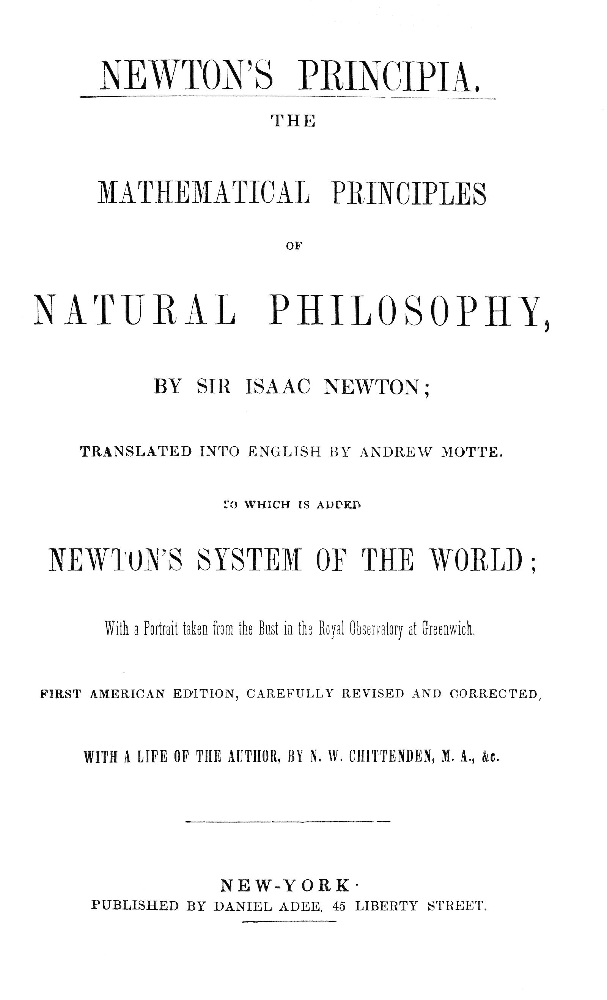
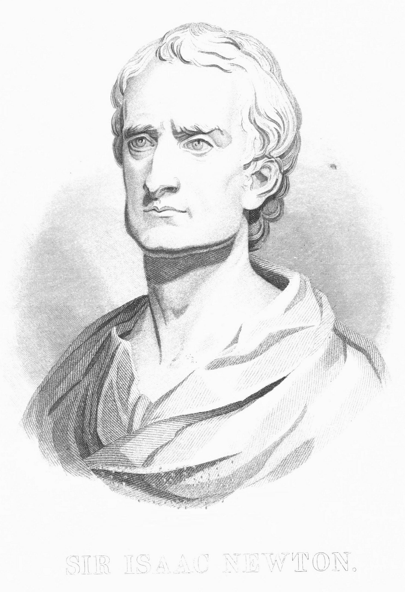

Title: Newton's Principia
The mathematical principles of natural philosophy
Author: Isaac Newton
Contributor: N. W. Chittenden
Translator: Andrew Motte
Release date: June 27, 2025 [eBook #76404]
Most recently updated: May 21, 2026
Language: English
Original publication: New York: Daniel Adee, 1846
Other information and formats: www.gutenberg.org/ebooks/76404
Credits: Chris Curnow, John Welch, Laura Natal and the Online Distributed Proofreading Team at https://www.pgdp.net (This file was produced from images generously made available by The Internet Archive)


SIR ISAAC NEWTON.
NEWTON'S PRINCIPIA.
BY SIR ISAAC NEWTON;
TRANSLATED INTO ENGLISH BY ANDREW MOTTE.
TO WHICH IS ADDED
NEWTON'S SYSTEM OF THE WORLD;
With a Portrait taken from the Bust in the Royal Observatory at Greenwich.
FIRST AMERICAN EDITION, CAREFULLY REVISED AND CORRECTED,
WITH A LIFE OF THE AUTHOR, BY N. W. CHITTENDEN, M. A., &c.
NEW-YORK
PUBLISHED BY DANIEL ADEE, 45 LIBERTY STREET.
Entered according to Act of Congress, in the year 1846, by
DANIEL ADEE.
In the Clerk's Office of the Southern District Court of New-York.
Turney & Lockwood's Stereo.
16 Spruce St. N. Y.
[Pg 3]
TO THE
TEACHERS OF THE NORMAL SCHOOL
OF THE STATE OF NEW-YORK.
GENTLEMEN:—
A stirring freshness in the air, and ruddy streaks upon the horizon of the moral world betoken the grateful dawning of a new era. The days of a drivelling instruction are departing. With us is the opening promise of a better time, wherein genuine manhood doing its noblest work shall have adequate reward. TEACHER is the highest and most responsible office man can fill. Its dignity is, and will yet be held commensurate with its duty—a duty boundless as man's intellectual capacity, and great as his moral need—a duty from the performance of which shall emanate an influence not limited to the now and the here, but which surely will, as time flows into eternity and space into infinity, roll up, a measureless curse or a measureless blessing, in inconceivable swellings along the infinite curve. It is an office that should be esteemed of even sacred import in this country. Ere long a hundred millions, extending from the Atlantic to the Pacific, from Baffin's Bay to that of Panama, shall call themselves American citizens. What a field for those two master-passions of the human soul—the love of Rule, and the love of Gain! How shall our liberties continue to be preserved from the graspings of Ambition and the corruptions of Gold? Not by Bills of Rights[Pg 4] Constitutions, and Statute Books; but alone by the rightly cultivated hearts and heads of the PEOPLE. They must themselves guard the Ark. It is yours to fit them for the consecrated charge. Look well to it: for you appear clothed in the majesty of great power! It is yours to fashion, and to inform, to save, and to perpetuate. You are the Educators of the People: you are the prime Conservators of the public weal. Betray your trust, and the sacred fires would go out, and the altars crumble into dust: knowledge become lost in tradition, and Christian nobleness a fable! As you, therefore, are multiplied in number, elevated in consideration, increased in means, and fulfill, well and faithfully, all the requirements of true Teachers, so shall our favoured land lift up her head among the nations of the earth, and call herself blessed.
In conclusion, Gentlemen, to you, as the conspicuous leaders in the vast and honourable labour of Educational Reform, and Popular Teaching, the First American Edition of the PRINCIPIA of Newton—the greatest work of the greatest Teacher—is most respectfully dedicated.
N. W. CHITTENDEN.
[Pg v]
THAT the PRINCIPIA of Newton should have remained so generally unknown in this country to the present day is a somewhat remarkable fact; because the name of the author, learned with the very elements of science, is revered at every hearth-stone where knowledge and virtue are of chief esteem, while, abroad, in all the high places of the land, the character which that name recalls is held up as the noblest illustration of what MAN may be, and may do, in the possession and manifestation of pre-eminent intellectual and moral worth; because the work is celebrated, not only in the history of one career and one mind, but in the history of all achievement and human reason itself; because of the spirit of inquiry, which has been aroused, and which, in pursuing its searchings, is not always satisfied with stopping short of the fountain-head of any given truth; and, finally, because of the earnest endeavour that has been and is constantly going on, in many sections of the Republic, to elevate the popular standard of education and give to scientific and other efforts a higher and a better aim.
True, the PRINCIPIA has been hitherto inaccessible to popular use. A few copies in Latin, and occasionally one in English may be found in some of our larger libraries, or in the possession of some ardent disciple of the great Master. But a dead language in the one case, and an enormous price in both, particularly in that of the English edition, have thus far opposed very sufficient obstacles to the wide circulation of the work. It is now, however, placed within the reach of all. And in performing this labour, the utmost care has been taken, by collation, revision, and otherwise, to render the First American Edition the most accurate and beautiful in our language. "Le plus beau monument que l'on puisse élever à la gloire de Newton, c'est une bonne édition de ses ouvrages:" and a monument like unto that we would here[Pg vi] set up. The PRINCIPIA, above all, glows with the immortality of a transcendant mind. Marble and brass dissolve and pass away; but the true creations of genius endure, in time and beyond time, forever: high upon the adamant of the indestructible, they send forth afar and near, over the troublous waters of life, a pure, unwavering, quenchless light whereby the myriad myriads of barques, richly laden with reason, intelligence and various faculty, are guided through the night and the storm, by the beetling shore and the hidden rock, the breaker and the shoal, safely into havens calm and secure.
To the teacher and the taught, the scholar and the student, the devotee of Science and the worshipper of Truth, the PRINCIPIA must ever continue to be of inestimable value. If to educate means, not so much to store the memory with symbols and facts, as to bring forth the faculties of the soul and develope them to the full by healthy nurture and a hardy discipline, then, what so effective to the accomplishment of that end as the study of Geometrical Synthesis? The Calculus, in some shape or other, is, indeed, necessary to the successful prosecution of researches in the higher branches of philosophy. But has not the Analytical encroached upon the Synthetical, and Algorithmic Formulæ been employed when not requisite, either for the evolution of truth, or even its apter illustration? To each method belongs, undoubtedly, an appropriate use. Newton, himself the inventor of Fluxions, censured the handling of Geometrical subjects by Algebraical calculations; and the maturest opinions which he expressed were additionally in favour of the Geometrical Method. His preference, so strongly marked, is not to be reckoned a mere matter of taste; and his authority should bear with preponderating weight upon the decision of every instructor in adopting what may be deemed the best plan to insure the completest mental development. Geometry, the vigorous product of remote time; blended with the earliest aspirations of Science and the earliest applications of Art; as well in the measures of music as in the movement of spheres; as wholly in the structure of the atom as in that of the world; directing MOTION and shaping APPEARANCE; in a word, at the moulding of the created all, is, in comprehensive[Pg vii] view, the outward form of that Inner Harmony of which and in which all things are. Plainly, therefore, this noble study has other and infinitely higher uses than to increase the power of abstraction. A more general and thorough cultivation of it should be strenuously insisted on. Passing from the pages of Euclid or Legendre, might not the student be led, at the suitable time, to those of the PRINCIPIA wherein Geometry may be found in varied use from the familiar to the sublime? The profoundest and the happiest results, it is believed, would attend upon this enlargement of our Educational System.
Let the PRINCIPIA, then, be gladly welcomed into every Hall where a TRUE TEACHER presides. And they who are guided to the diligent study of this incomparable work, who become strengthened by its reason, assured by its evidence, and enlightened by its truths, and who rise into loving communion with the great and pure spirit of its author, will go forth from the scenes of their pupilage, and take their places in the world as strong-minded, right-hearted men—such men as the Theory of our Government contemplates and its practical operation absolutely demands.
| Life of Sir Isaac Newton | 9 |
| THE PRINCIPIA. | |
| The Author's Preface | lxvii |
| BOOK I. | |
| Definitions | 73 |
| Axioms, or Laws of Motion | 83 |
| OF THE MOTION OF BODIES | |
| Section I: Of the method of first and last ratios of quantities, by the help whereof we demonstrate the propositions that follow |
95 |
| Section II: Of the Invention of Centripetal Forces | 103 |
| Section III: Of the motion of bodies in eccentric conic sections | 116 |
| Section IV: Of the finding of elliptic, parabolic, and hyperbolic orbits, from the focus given |
125 |
| Section V: How the orbits are to be found when neither focus is given | 131 |
| Section VI: How the motions are to be found in given orbits | 153 |
| Section VII: Concerning the rectilinear ascent and descent of bodies | 159 |
| Section VIII: Of the invention of orbits wherein bodies will revolve, being acted upon by any sort of centripetal force |
168 |
| Section IX: Of the motion of bodies in movable orbits; and of the motion of the apsides |
172 |
| Section X: Of the motion of bodies in given superficies; and of the reciprocal motion of funependulous bodies |
182 |
| Section XI: Of the motions of bodies tending to each other with centripetal forces |
194 |
| Section XII: Of the attractive forces of sphærical bodies | 218 |
| Section XIII: Of the attractive forces of bodies which are not of a sphærical figure |
233 |
| Section XIV: Of the motion of very small bodies when agitated by centripetal forces tending to the several parts of any very great body |
243 |
| BOOK II. | |
| OF THE MOTION OF BODIES | |
| Section I: Of the motion of bodies that are resisted in the ratio of the velocity |
251 |
| Section II: Of the motion of bodies that are resisted in the duplicate ratio of their velocities |
258 |
| Section III: Of the motions of bodies which are resisted partly in the ratio of the velocities, and partly in the duplicate of the same ratio |
279 |
| Section IV: Of the circular motion of bodies in resisting mediums | 287 |
| Section V: Of the density and compression of fluids; and of hydrostatics |
293 |
| Section VI: Of the motion and resistance of funependulous bodies | 303 |
| Section VII: Of the motion of fluids and the resistance made to projected bodies |
323 |
| Section VIII: Of motion propagated through fluids | 356 |
| Section IX: Of the circular motion of fluids | 370 |
| BOOK III. | |
| Book III | 383 |
| Rules of Reasoning in Philosophy | 384 |
| Phænomena, or Appearances | 386 |
| Propositions I-IX (Force of gravity) | 390 |
| Propositions X-XXIV (Motions of celestial bodies and the sea) | 400 |
| Propositions XXV-XXXIII (Quantity of lunar motions) | 419 |
| Propositions XXXVI-XXXVIII (Forces to move the sea) | 449 |
| Lemmas I-III, Proposition XXXIX (Precession of equinoxes) | 455 |
| Lemmas IV-XI, Propositions XL-XLII (Comets) | 460 |
| General Scholium | 503 |
| The System of the World. | 511 |
| Index to the Principia. | 575 |
[Pg 9]
Nec fas est proprius mortali attingere Divos.-HALLEY.
FROM the thick darkness of the middle ages man's struggling spirit emerged as in new birth; breaking out of the iron control of that period; growing strong and confident in the tug and din of succeeding conflict and revolution, it bounded forwards and upwards with resistless vigour to the investigation of physical and moral truth; ascending height after height; sweeping afar over the earth, penetrating afar up into the heavens; increasing in endeavour, enlarging in endowment; every where boldly, earnestly out-stretching, till, in the AUTHOR of the PRINCIPIA, one arose, who, grasping the master-key of the universe and treading its celestial paths, opened up to the human intellect the stupendous realities of the material world, and, in the unrolling of its harmonies, gave to the human heart a new song to the goodness, wisdom, and majesty of the all-creating, all-sustaining, all-perfect God.
Sir Isaac Newton, in whom the rising intellect seemed to attain, as it were, to its culminating point, was born on the 25th of December, O. S. 1642—Christmas day—at Woolsthorpe, in the parish of Colsterworth, in Lincolnshire. His father, John Newton, died at the age of thirty-six, and only a few months after his marriage to Harriet Ayscough, daughter of James Ayscough, of Rutlandshire. Mrs. Newton, probably wrought upon by the early loss of her husband, gave premature birth to her only and posthumous child, of which, too, from its extreme diminutiveness, she appeared likely to be soon bereft. Happily, it was otherwise decreed! The tiny infant, on whose little lips the breath of life[Pg 10] so doubtingly hovered, lived;—lived to a vigorous maturity, to a hale old age;—lived to become the boast of his country, the wonder of his time, and the "ornament of his species."
Beyond the grandfather, Robert Newton, the descent of Sir Isaac cannot with certainty be traced. Two traditions were held in the family: one, that they were of Scotch extraction; the other, that they came originally from Newton, in Lancashire, dwelling, for a time, however, at Westby, county of Lincoln, before the removal to and purchase of Woolsthorpe—about a hundred years before this memorable birth.
The widow Newton was left with the simple means of a comfortable subsistence. The Woolsthorpe estate together with a small one which she possessed at Sewstern, in Leicestershire, yielded her an income of some eighty pounds; and upon this limited sum, she had to rely chiefly for the support of herself, and the education of her child. She continued his nurture for three years, when, marrying again, she confided the tender charge to the care of her own mother.
Great genius is seldom marked by precocious development; and young Isaac, sent, at the usual age, to two day schools at Skillington and Stoke, exhibited no unusual traits of character. In his twelfth year, he was placed at the public school at Grantham, and boarded at the house of Mr. Clark, an apothecary. But even in this excellent seminary, his mental acquisitions continued for a while unpromising enough: study apparently had no charms for him; he was very inattentive, and ranked low in the school. One day, however, the boy immediately above our seemingly dull student gave him a severe kick in the stomach; Isaac, deeply affected, but with no outburst of passion, betook himself, with quiet, incessant toil, to his books; he quickly passed above the offending classmate; yet there he stopped not; the strong spirit was, for once and forever, awakened, and, yielding to its noble impulse, he speedily took up his position at the head of all.
His peculiar character began now rapidly to unfold itself. Close application grew to be habitual. Observation alternated with reflection. "A sober, silent, thinking lad," yet, the wisest and the kindliest, the indisputable leader of his fellows. Generosity,[Pg 11] modesty, and a love of truth distinguished him then as ever afterwards. He did not often join his classmates in play; but he would contrive for them various amusements of a scientific kind. Paper kites he introduced; carefully determining their best form and proportions, and the position and number of points whereby to attach the string. He also invented paper lanterns; these served ordinarily to guide the way to school in winter mornings, but occasionally for quite another purpose; they were attached to the tails of kites in a dark night, to the dismay of the country people dreading portentous comets, and to the immeasurable delight of his companions. To him, however, young as he was, life seemed to have become an earnest thing. When not occupied with his studies, his mind would be engrossed with mechanical contrivances; now imitating, now inventing. He became singularly skilful in the use of his little saws, hatchets, hammers, and other tools. A windmill was erected near Grantham; during the operations of the workmen, he was frequently present; in a short time, he had completed a perfect working model of it, which elicited general admiration. Not content, however, with this exact imitation, he conceived the idea of employing, in the place of sails, animal power, and, adapting the construction of his mill accordingly, he enclosed in it a mouse, called the miller, and which by acting on a sort of treadwheel, gave motion to the machine. He invented, too, a mechanical carriage—having four wheels, and put in motion with a handle worked by the person sitting inside. The measurement of time early drew his attention. He first constructed a water clock, in proportions somewhat like an old-fashioned house clock. The index of the dial plate was turned by a piece of wood acted upon by dropping water. This instrument, though long used by himself, and by Mr. Clark's family, did not satisfy his inquiring mind. His thoughts rose to the sun; and, by careful and oft-repeated observations of the solar movements, he subsequently formed many dials. One of these, named Isaac's dial, was the accurate result of years' labour, and was frequently referred to for the hour of the day by the country people.
May we not discern in these continual efforts—the diligent research, the patient meditation, the aspiring glance, and the energy[Pg 12] of discovery—the stirring elements of that wondrous spirit, which, clear, calm, and great, moved, in after years, through deep onward through deep of Nature's mysteries, unlocking her strongholds, dispelling darkness, educing order—everywhere silently conquering.
Newton had an early and decided taste for drawing. Pictures, taken sometimes from copies, but often from life, and drawn, coloured and framed by himself, ornamented his apartment. He was skilled also, in poetical composition, "excelled in making verses;" some of these were borne in remembrance and repeated, seventy years afterward, by Mrs. Vincent, for whom, in early youth, as Miss Storey, he formed an ardent attachment. She was the sister of a physician resident near Woolsthorpe; but Newton's intimate acquaintance with her began at Grantham, where they were both numbered among the inmates of the same house. Two or three years younger than himself, of great personal beauty, and unusual talent, her society afforded him the greatest pleasure; and their youthful friendship, it is believed, gradually rose to a higher passion; but inadequacy of fortune prevented their union. Miss Storey was afterwards twice married; Newton, never; his esteem for her continued unabated during life, accompanied by numerous acts of attention and kindness.
In 1656, Newton's mother was again left a widow, and took up her abode once more at Woolsthorpe. He was now fifteen years of age, and had made great progress in his studies; but she, desirous of his help, and from motives of economy, recalled him from school. Business occupations, however, and the management of the farm, proved utterly distasteful to him. When sent to Grantham Market on Saturdays, he would betake himself to his former lodgings in the apothecary's garret, where some of Mr. Clark's old books employed his thoughts till the aged and trustworthy servant had executed the family commissions and announced the necessity of return: or, at other times, our young philosopher would seat himself under a hedge, by the wayside, and continue his studies till the same faithful personage—proceeding alone to the town and completing the day's business—stopped as he returned.[Pg 13] The more immediate affairs of the farm received no better attention. In fact, his passion for study grew daily more absorbing, and his dislike for every other occupation more intense. His mother, therefore, wisely resolved to give him all the advantages which an education could confer. He was sent back to Grantham school, where he remained for some months in busy preparation for his academical studies. At the recommendation of one of his uncles, who had himself studied at Trinity College, Cambridge, Newton proceeded thither, and was duly admitted, on the 5th day of June 1660, in the eighteenth year of his age.
The eager student had now entered upon a new and wider field; and we find him devoting himself to the pursuit of knowledge with amazing ardour and perseverance. Among other subjects, his attention was soon drawn to that of Judicial Astrology. He exposed the folly of this pseudo-science by erecting a figure with the aid of one or two of the problems of Euclid;—and thus began his study of the Mathematics. His researches into this science were prosecuted with unparalleled vigour and success. Regarding the propositions contained in Euclid as self-evident truths, he passed rapidly over this ancient system—a step which he afterward much regretted—and mastered, without further preparatory study, the Analytical Geometry of Descartes. Wallis's Arithmetic of Infinites, Saunderson's Logic, and the Optics of Kepler, he also studied with great care; writing upon them many comments; and, in these notes on Wallis's work was undoubtedly the germ of his fluxionary calculus. His progress was so great that he found himself more profoundly versed than his tutor in many branches of learning. Yet his acquisitions were not gotten with the rapidity of intuition; but they were thoroughly made and firmly secured. Quickness of apprehension, or intellectual nimbleness did not belong to him. He saw too far: his insight was too deep. He dwelt fully, cautiously upon the least subject; while to the consideration of the greatest, he brought a massive strength joined with a matchless clearness, that, regardless of the merely trivial or unimportant, bore with unerring sagacity upon the prominences of the subject, and, grappling with its difficulties, rarely failed to surmount them.
[Pg 14]
His early and fast friend, Dr. Barrow—in compass of invention only inferior to Newton—who had been elected Professor of Greek in the University, in 1660, was made Lucasian Professor of Mathematics in 1663, and soon afterward delivered his Optical Lectures: the manuscripts of these were revised by Newton, and several oversights corrected, and many important suggestions made by him; but they were not published till 1669.
In the year 1665, he received the degree of Bachelor of Arts; and, in 1666, he entered upon those brilliant and imposing discoveries which have conferred inappreciable benefits upon science, and immortality upon his own name.
Newton, himself, states that he was in possession of his Method of Fluxions, "in the year 1666, or before." Infinite quantities had long been a subject of profound investigation; among the ancients by Archimedes, and Pappus of Alexandria; among the moderns by Kepler, Cavaleri, Roberval, Fermat and Wallis. With consummate ability Dr. Wallis had improved upon the labours of his predecessors: with a higher power, Newton moved forwards from where Wallis stopped. Our author first invented his celebrated BINOMIAL THEOREM. And then, applying this Theorem to the rectification of curves, and to the determination of the surfaces and contents of solids, and the position of their centres of gravity, he discovered the general principle of deducing the areas of curves from the ordinate, by considering the area as a nascent quantity, increasing by continual fluxion in the proportion of the length of the ordinate, and supposing the abscissa to increase uniformly in proportion to the time. Regarding lines as generated by the motion of points, surfaces by the motion of lines, and solids by the motion of surfaces, and considering that the ordinates, abscissae, &c., of curves thus formed, vary according to a regular law depending on the equation of the curve, he deduced from this equation the velocities with which these quantities are generated, and obtained by the rules of infinite series, the ultimate value required. To the velocities with which every line or quantity is generated, he gave the name of FLUXIONS, and to the lines or quantities themselves, that of FLUENTS. A discovery that successively baffled the acutest and strongest[Pg 15] intellects:—that, variously modified, has proved of incalculable service in aiding to develope the most abstruse and the highest truths in Mathematics and Astronomy: and that was of itself enough to render any name illustrious in the crowded Annals of Science.
At this period, the most distinguished philosophers were directing all their energies to the subject of light and the improvement of the refracting telescope. Newton, having applied himself to the grinding of "optic glasses of other figures than spherical," experienced the impracticability of executing such lenses; and conjectured that their defects, and consequently those of refracting telescopes, might arise from some other cause than the imperfect convergency of rays to a single point. He accordingly "procured a triangular glass prism to try therewith the celebrated phenomena of colours." His experiments, entered upon with zeal, and conducted with that industry, accuracy, and patient thought, for which he was so remarkable, resulted in the grand conclusion, that LIGHT WAS NOT HOMOGENEOUS, BUT CONSISTED OF RAYS, SOME OF WHICH WERE MORE REFRANGIBLE THAN OTHERS. This profound and beautiful discovery opened up a new era in the History of Optics. As bearing, however, directly upon the construction of telescopes, he saw that a lens refracting exactly like a prism would necessarily bring the different rays to different foci, at different distances from the glass, confusing and rendering the vision indistinct. Taking for granted that all bodies produced spectra of equal length, he dismissed all further consideration of the refracting instrument, and took up the principle of reflection. Rays of all colours, he found, were reflected regularly, so that the angle of reflection was equal to the angle of incidence, and hence he concluded that optical instruments might be brought to any degree of perfection imaginable, provided reflecting specula of the requisite figure and finish could be obtained. At this stage of his optical researches, he was forced to leave Cambridge on account of the plague which was then desolating England.
He retired to Woolsthorpe. The old manor-house, in which he was born, was situated in a beautiful little valley, on the west side of the river Witham; and here in the quiet home of his boyhood,[Pg 16] he passed his days in serene contemplation, while the stalking pestilence was hurrying its tens of thousands into undistinguishable graves.
Towards the close of a pleasant day in the early autumn of 1666, he was seated alone beneath a tree, in his garden, absorbed in meditation. He was a slight young man; in the twenty-fourth year of his age; his countenance mild and full of thought. For a century previous, the science of Astronomy had advanced with rapid strides. The human mind had risen from the gloom and bondage of the middle ages, in unparalleled vigour, to unfold the system, to investigate the phenomena, and to establish the laws of the heavenly bodies. Copernicus, Tycho Brahe, Kepler, Galileo, and others had prepared and lighted the way for him who was to give to their labour its just value, and to their genius its true lustre. At his bidding isolated facts were to take order as parts of one harmonious whole, and sagacious conjectures grow luminous in the certain splendour of demonstrated truth. And this ablest man had come—was here. His mind, familiar with the knowledge of past effort, and its unequalled faculties developed in transcendant strength, was now moving on to the very threshold of its grandest achievement. Step by step the untrodden path was measured, till, at length, the entrance seemed disclosed, and the tireless explorer to stand amid the first opening wonders of the universe.
The nature of gravity—that mysterious power which causes all bodies to descend towards the centre of the earth—had, indeed, dawned upon him. And reason busily united link to link of that chain which was yet to be traced joining the least to the vastest, the most remote to the nearest, in one harmonious bond. From the bottoms of the deepest caverns to the summits of the highest mountains, this power suffers no sensible change: may not its action, then, extend to the moon? Undoubtedly: and further reflection convinced him that such a power might be sufficient for retaining that luminary in her orbit round the earth. But, though this power suffers no sensible variation, in the little change of distance from the earth's centre, at which we may place ourselves, yet, at the distance of the moon, may not its force undergo[Pg 17] more or less diminution? The conjecture appeared most probable: and, in order to estimate what the degree of diminution might be, he considered that if the moon be retained in her orbit by the force of gravity, the primary planets must also be carried round the sun by the like power; and, by comparing the periods of the several planets with their distances from the sun, he found that, if they were held in their courses by any power like gravity, its strength must decrease in the duplicate proportion of the increase of distance. In forming this conclusion, he supposed the planets to move in perfect circles, concentric to the sun. Now was this the law of the moon's motion? Was such a force, emanating from the earth and directed to the moon, sufficient, when diminished as the square of the distance, to retain her in her orbit? To ascertain this master-fact, he compared the space through which heavy bodies fall, in a second of time, at a given distance from the centre of the earth, namely, at its surface, with the space through which the moon falls, as it were, to the earth, in the same time, while revolving in a circular orbit. He was absent from books; and, therefore, adopted, in computing the earth's diameter, the common estimate of sixty miles to a degree of latitude as then in use among geographers and navigators. The result of his calculations did not, of course, answer his expectations; hence, he concluded that some other cause, beyond the reach of observation—analogous, perhaps, to the vortices of Descartes—joined its action to that of the power of gravity upon the moon. Though by no means satisfied, he yet abandoned awhile further inquiry, and remained totally silent upon the subject.
These rapid marches in the career of discovery, combined with the youth of Newton, seem to evince a penetration the most lively, and an invention the most exuberant. But in him there was a conjunction of influences as extraordinary as fortunate. Study, unbroken, persevering and profound carried on its informing and disciplining work upon a genius, natively the greatest, and rendered freest in its movements, and clearest in its vision, through the untrammelling and enlightening power of religion. And, in this happy concurrence, are to be sought the elements of those amazing abilities, which, grasping, with equal facility, the[Pg 18] minute and the stupendous, brought these successively to light, and caused science to make them her own.
In 1667, Newton was made a Junior Fellow; and, in the year following, he took his degree of Master of Arts, and was appointed to a Senior Fellowship.
On his return to Cambridge, in 1668, he resumed his optical labours. Having thought of a delicate method of polishing metal, he proceeded to the construction of his newly projected reflecting telescope; a small specimen of which he actually made with his own hands. It was six inches long; and magnified about forty times;—a power greater than a refracting instrument of six feet tube could exert with distinctness. Jupiter, with his four satellites, and the horns, or moon-like phases of Venus were plainly visible through it. THIS WAS THE FIRST REFLECTING TELESCOPE EVER EXECUTED AND DIRECTED TO THE HEAVENS. He gave an account of it, in a letter to a friend, dated February 23d, 1668-9—a letter which is also remarkable for containing the first allusion to his discoveries "concerning the nature of light." Encouraged by the success of his first experiment, he again executed with his own hands, not long afterward, a second and superior instrument of the same kind. The existence of this having come to the knowledge of the Royal Society of London, in 1671, they requested it of Newton for examination. He accordingly sent it to them. It excited great admiration; it was shown to the king; a drawing and description of it was sent to Paris; and the telescope itself was carefully preserved in the Library of the Society. Newton lived to see his invention in public use, and of eminent service in the cause of science.
In the spring of 1669, he wrote to his friend Francis Aston, Esq., then about setting out on his travels, a letter of advice and directions, it was dated May 18th, and is interesting as exhibiting some of the prominent features in Newton's character. Thus:—
"Since in your letter you give me so much liberty of spending my judgment about what may be to your advantage in travelling, I shall do it more freely than perhaps otherwise would have been decent. First, then, I will lay down some general rules, most of[Pg 19] which, I believe, you have considered already; but if any of them be new to you, they may excuse the rest; if none at all, yet is my punishment more in writing than yours in reading.
"When you come into any fresh company. 1. Observe their humours. 2. Suit your own carriage thereto, by which insinuation you will make their converse more free and open. 3. Let your discourse be more in queries and doubtings than peremptory assertions or disputings, it being the design of travellers to learn, not to teach. Besides, it will persuade your acquaintance that you have the greater esteem of them, and so make them more ready to communicate what they know to you; whereas nothing sooner occasions disrespect and quarrels than peremptoriness. You will find little or no advantage in seeming wiser or much more ignorant than your company. 4. Seldom discommend anything though never so bad, or do it but moderately, lest you be unexpectedly forced to an unhandsome retraction. It is safer to commend any thing more than it deserves, than to discommend a thing so much as it deserves; for commendations meet not so often with oppositions, or, at least, are not usually so ill resented by men that think otherwise, as discommendations; and you will insinuate into men's favour by nothing sooner than seeming to approve and commend what they like; but beware of doing it by comparison. 5. If you be affronted, it is better, in a foreign country, to pass it by in silence, and with a jest, though with some dishonour, than to endeavour revenge; for, in the first case, your credit's ne'er the worse when you return into England, or come into other company that have not heard of the quarrel. But, in the second case, you may bear the marks of the quarrel while you live, if you outlive it at all. But, if you find yourself unavoidably engaged, 'tis best, I think, if you can command your passion and language, to keep them pretty evenly at some certain moderate pitch, not much heightening them to exasperate your adversary, or provoke his friends, nor letting them grow overmuch dejected to make him insult. In a word, if you can keep reason above passion, that and watchfulness will be your best defendants. To which purpose you may consider, that, though such excuses as this—He provok't me so much I could not forbear—may pass[Pg 20] among friends, yet amongst strangers they are insignificant, and only argue a traveller's weakness.
"To these I may add some general heads for inquiries or observations, such as at present I can think on. As, 1. To observe the policies, wealth, and state affairs of nations, so far as a solitary traveller may conveniently do. 2. Their impositions upon all sorts of people, trades, or commodities, that are remarkable. 3. Their laws and customs, how far they differ from ours. 4. Their trades and arts wherein they excel or come short of us in England. 5. Such fortifications as you shall meet with, their fashion, strength, and advantages for defence, and other such military affairs as are considerable. 6. The power and respect belonging to their degrees of nobility or magistracy. 7. It will not be time misspent to make a catalogue of the names and excellencies of those men that are most wise, learned, or esteemed in any nation. 8. Observe the mechanism and manner of guiding ships. 9. Observe the products of Nature in several places, especially in mines, with the circumstances of mining and of extracting metals or minerals out of their ore, and of refining them; and if you meet with any transmutations out of their own species into another (as out of iron into copper, out of any metal into quicksilver, out of one salt into another, or into an insipid body, &c.), those, above all, will be worth your noting, being the most luciferous, and many times lucriferous experiments, too, in philosophy. 10. The prices of diet and other things. 11. And the staple commodities of places.
"These generals (such as at present I could think of), if they will serve for nothing else, yet they may assist you in drawing up a model to regulate your travels by. As for particulars, these that follow are all that I can now think of, viz.; whether at Schemnitium, in Hungary (where there are mines of gold, copper, iron, vitriol, antimony, &c.), they change iron into copper by dissolving it in a vitriolate water, which they find in cavities of rocks in the mines, and then melting the slimy solution in a strong fire, which in the cooling proves copper. The like is said to be done in other places, which I cannot now remember; perhaps, too, it may be done in Italy. For about twenty or thirty years agone there was[Pg 21] a certain vitriol came from thence (called Roman vitriol), but of a nobler virtue than that which is now called by that name; which vitriol is not now to be gotten, because, perhaps, they make a greater gain by some such trick as turning iron into copper with it than by selling it. 2. Whether, in Hungary, Sclavonia, Bohemia, near the town Eila, or at the mountains of Bohemia near Silesia, there be rivers whose waters are impregnated with gold; perhaps, the gold being dissolved by some corrosive water like aqua regis, and the solution carried along with the stream, that runs through the mines. And whether the practice of laying mercury in the rivers, till it be tinged with gold, and then straining the mercury through leather, that the gold may stay behind, be a secret yet, or openly practised. 3. There is newly contrived, in Holland, a mill to grind glasses plane withal, and I think polishing them too; perhaps it will be worth the while to see it. 4. There is in Holland one —— Borry, who some years since was imprisoned by the Pope, to have extorted from him secrets (as I am told) of great worth, both as to medicine and profit, but he escaped into Holland, where they have granted him a guard. I think he usually goes clothed in green. Pray inquire what you can of him, and whether his ingenuity be any profit to the Dutch. You may inform yourself whether the Dutch have any tricks to keep their ships from being all worm-eaten in their voyages to the Indies. Whether pendulum clocks do any service in finding out the longitude, &c.
"I am very weary, and shall not stay to part with a long compliment, only I wish you a good journey, and God be with you."
It was not till the month of June, 1669, that our author made known his Method of Fluxions. He then communicated the work which he had composed upon the subject, and entitled, ANALYSIS PER EQUATIONES NUMERO TERMINORUM INFINITAS, to his friend Dr. Barrow. The latter, in a letter dated 20th of the same month, mentioned it to Mr. Collins, and transmitted it to him, on the 31st of July thereafter. Mr. Collins greatly approved of the work; took a copy of it; and sent the original back to Dr. Barrow. During the same and the two following years, Mr.[Pg 22] Collins, by his extensive correspondence, spread the knowledge of this discovery among the mathematicians in England, Scotland, France, Holland and Italy.
Dr. Barrow, having resolved to devote himself to Theology, resigned the Lucasian Professorship of Mathematics, in 1669, in favour of Newton, who accordingly received the appointment to the vacant chair.
During the years 1669, 1670, and 1671, our author, as such Professor, delivered a course of Optical Lectures. Though these contained his principal discoveries relative to the different refrangibility of light, yet the discoveries themselves did not become publicly known, it seems, till he communicated them to the Royal Society, a few weeks after being elected a member thereof, in the spring of 1671-2. He now rose rapidly in reputation, and was soon regarded as foremost among the philosophers of the age. His paper on light excited the deepest interest in the Royal Society, who manifested an anxious solicitude to secure the author from the "arrogations of others," and proposed to publish his discourse in the monthly numbers in which the Transactions were given to the world. Newton, gratefully sensible of these expressions of esteem, willingly accepted of the proposal for publication. He gave them also, at this time, the results of some further experiments in the decomposition and re-composition of light:—that the same degree of refrangibility always belonged to the same colour, and the same colour to the same degree of refrangibility: that the seven different colours of the spectrum were original, or simple, and that whiteness, or white light was a compound of all these seven colours.
The publication of his new doctrines on light soon called forth violent opposition as to their soundness. Hooke and Huygens—men eminent for ability and learning—were the most conspicuous of the assailants. And though Newton effectually silenced all his adversaries, yet he felt the triumph of little gain in comparison with the loss his tranquillity had sustained. He subsequently remarked in allusion to this controversy—and to one with whom he was destined to have a longer and a bitterer conflict—"I was so persecuted with discussions arising from the publication of my[Pg 23] theory of light, that I blamed my own imprudence for parting with so substantial a blessing as my quiet to run after a shadow."
In a communication to Mr. Oldenburg, Secretary of the Royal Society, in 1672, our author stated many valuable suggestions relative to the construction of REFLECTING MICROSCOPES which he considered even more capable of improvement than telescopes. He also contemplated, about the same time, an edition of Kinckhuysen's Algebra, with notes and additions; partially arranging, as an introduction to the work, a treatise, entitled, A Method of Fluxions; but he finally abandoned the design. This treatise, however, he resolved, or rather consented, at a late period of his life, to put forth separately; and the plan would probably have been carried into execution had not his death intervened. It was translated into English, and published in 1736 by John Colson, Professor of Mathematics in Cambridge.
Newton, it is thought, made his discoveries concerning the INFLECTION and DIFFRACTION of light before 1674. The phenomena of the inflection of light had been first discovered more than ten years before by Grimaldi. And Newton began by repeating one of the experiments of the learned Jesuit—admitting a beam of the sun's light through a small pin hole into a dark chamber: the light diverged from the aperture in the form of a cone, and the shadows of all bodies placed in this light were larger than might have been expected, and surrounded with three coloured fringes, the nearest being widest, and the most remote the narrowest. Newton, advancing upon this experiment, took exact measures of the diameter of the shadow of a human hair, and of the breadth of the fringes, at different distances behind it, and discovered that these diameters and breadths were not proportional to the distances at which they were measured. He hence supposed that the rays which passed by the edge of the hair were deflected or turned aside from it, as if by a repulsive force, the nearest rays suffering the greatest, the more remote a less degree of deflection. In explanation of the coloured fringes, he queried: whether the rays which differ in refrangibility do not differ also in flexibility, and whether they are not, by these different inflections, separated from one another, so as after separation[Pg 24] to make the colours in the three fringes above described? Also, whether the rays, in passing by the edges and sides of bodies, are not bent several times backwards and forwards with an eel-like motion—the three fringes arising from three such bendings? His inquiries on this subject were here interrupted and never renewed.
His Theory of the COLOURS of NATURAL BODIES was communicated to the Royal Society, in February, 1675. This is justly regarded as one of the profoundest of his speculations. The fundamental principles of the Theory in brief, are:—That bodies possessing the greatest refractive powers reflect the greatest quantity of light; and that, at the confines of equally refracting media, there is no reflection. That the minutest particles of almost all natural bodies are in some degree transparent. That between the particles of bodies there are pores, or spaces, either empty or filled with media of a less density than the particles themselves. That these particles, and pores or spaces, have some definite size. Hence he deduced the Transparency, Opacity, and colours of natural bodies. Transparency arises from the particles and their pores being too small to cause reflection at their common surfaces—the light all passing through; Opacity from the opposite cause of the particles and their pores being sufficiently large to reflect the light which is "stopped or stifled" by the multitude of reflections; and colours from the particles, according to their several sizes, reflecting rays of one colour and transmitting those of another—or in other words, the colour that meets the eye is the colour reflected, while all the other rays are transmitted or absorbed.
Analogous in origin to the colours of natural bodies, he considered the COLOURS OF THIN PLATES. This subject was interesting and important, and had attracted considerable investigation. He, however, was the first to determine the law of the production of these colours, and, during the same year made known the results of his researches herein to the Royal Society. His mode of procedure in these experiments was simple and curious. He placed a double convex lens of a large known radius of curvature, upon the flat surface of a plano-convex object glass. Thus, from[Pg 25] their point of contact at the centre, to the circumference of the lens, he obtained plates of air, or spaces varying from the extremest possible thinness, by slow degrees, to a considerable thickness. Letting the light fall, every different thickness of this plate of air gave different colours—the point of contact of the lens and glass forming the centre of numerous concentric colored rings. Now the radius of curvature of the lens being known, the thickness of the plate of air, at any given point, or where any particular colour appeared, could be exactly determined. Carefully noting, therefore, the order in which the different colours appeared, he measured, with the nicest accuracy, the different thicknesses at which the most luminous parts of the rings were produced, whether the medium were air, water, or mica—all these substances giving the same colours at different thicknesses;—the ratio of which he also ascertained. From the phenomena observed in these experiments, Newton deduced his Theory of Fits of EASY REFLECTION AND TRANSMISSION of light. It consists in supposing that every particle of light, from its first discharge from a luminous body, possesses, at equally distant intervals, dispositions to be reflected from, or transmitted through the surfaces of bodies upon which it may fall. For instance, if the rays are in a Fit of Easy Reflection, they are on reaching the surface, repelled, thrown off, or reflected from it; if, in a Fit of Easy Transmission, they are attracted, drawn in, or transmitted through it. By this Theory of Fits, our author likewise explained the colours of thick plates.
He regarded light as consisting of small material particles emitted from shining substances. He thought that these particles could be re-combined into solid matter, so that "gross bodies and light were convertible into one another;" that the particles of light and the particles of solid bodies acted mutually upon each other; those of light agitating and heating those of solid bodies, and the latter attracting and repelling the former. Newton was The first to suggest the idea of the POLARIZATION of light.
In the paper entitled An Hypothesis Explaining Properties of Light, December, 1675, our author first introduced his opinions respecting Ether—opinions which he afterward abandoned and again[Pg 26] permanently resumed—"A most subtle spirit which pervades" all bodies, and is expanded through all the heavens. It is electric, and almost, if not quite immeasurably elastic and rare. "By the force and action of which spirit the particles of bodies mutually attract one another, at near distances, and cohere, if contiguous; and electric bodies operate at greater distances, as well repelling as attracting the neighbouring corpuscles; and light is emitted, reflected, refracted, inflected and heats bodies; and all sensation is excited, and the members of animal bodies move at the command of the will, namely, by the vibrations of this spirit, mutually propagated along the solid filaments of the nerves, from the outward organs of sense to the brain, and from the brain into the muscles." This "spirit" was no anima mundi; nothing further from the thought of Newton; but was it not, on his part, a partial recognition of, or attempt to reach an ultimate material force, or primary element, by means of which, "in the roaring loom of time," this material universe, God's visible garment, may be woven for us?
The Royal Society were greatly interested in the results of some experiments, which our author had, at the same time, communicated to them relative to the excitation of electricity in glass; and they, after several attempts and further direction from him, succeeded in re-producing the same phenomena.
One of the most curious of Newton's minor inquiries related to the connexion between the refractive powers and chemical composition of bodies. He found on comparing the refractive powers and the densities of many different substances, that the former were very nearly proportional to the latter, in the same bodies. Unctuous and sulphureous bodies were noticed as remarkable exceptions—as well as the diamond—their refractive powers being two or three times greater in respect of their densities than in the case of other substances, while, as among themselves, the one was generally proportional to the other. He hence inferred as to the diamond a great degree of combustibility;—a conjecture which the experiments of modern chemistry have shown to be true.
The chemical researches of our author were probably pursued with more or less diligence from the time of his witnessing some[Pg 27] of the practical operations in that science at the Apothecary's at Grantham. DE NATURA ACIDORUM is a short chemical paper, on various topics, and published in Dr. Horsley's Edition of his works. TABULA QUANTITATUM ET GRADUUM COLORIS was inserted in the Philosophical Transactions; it contains a comparative scale of temperature from that of melting ice to that of a small kitchen coal-fire. He regarded fire as a body heated so hot as to emit light copiously; and flame as a vapour, fume, or exhalation heated so hot as to shine. To elective attraction, by the operation of which the small particles of bodies, as he conceived, act upon one another, at distances so minute as to escape observation, he ascribed all the various chemical phenomena of precipitation, combination, solution, and crystallization, and the mechanical phenomena of cohesion and capillary attraction. Newton's chemical views were illustrated and confirmed, in part, at least, in his own life-time. As to the structure of bodies, he was of opinion "that the smallest particles of matter may cohere by the strongest attractions, and compose bigger particles of weaker virtue; and many of these may cohere and compose bigger particles whose virtue is still weaker; and so on for divers successions, until the progression end in the biggest particles, on which the operations in chemistry and the colours of natural bodies depend, and which by adhering, compose bodies of sensible magnitude."
There is good reason to suppose that our author was a diligent student of the writings of Jacob Behmen; and that in conjunction with a relative, Dr. Newton, he was busily engaged, for several months in the earlier part of life, in quest of the philosopher's tincture. "Great Alchymist," however, very imperfectly describes the character of Behmen, whose researches into things material and things spiritual, things human and things divine, afford the strongest evidence of a great and original mind.
More appropriately here, perhaps, than elsewhere, may be given Newton's account of some curious experiments, made in his own person, on the action of light upon the retina. Locke, who was an intimate friend of our author, wrote to him for his opinion on a certain fact stated in Boyle's Book of Colours. Newton, in[Pg 28] his reply, dated June 30th, 1691, narrates the following circumstances, which probably took place in the course of his optical researches. Thus:—
"The observation you mention in Mr. Boyle's Book of Colours I once tried upon myself with the hazard of my eyes. The manner was this; I looked a very little while upon the sun in the looking-glass with my right eye, and then turned my eyes into a dark corner of my chamber, and winked, to observe the impression made, and the circles of colours which encompassed it, and how they decayed by degrees, and at last vanished. This I repeated a second and a third time. At the third time, when the phantasm of light and colours about it were almost vanished, intending my fancy upon them to see their last appearance, I found, to my amazement, that they began to return, and by little and little to become as lively and vivid as when I had newly looked upon the sun. But when I ceased to intend my fancy upon them, they vanished again. After this, I found, that as often as I went into the dark, and intended my mind upon them, as when a man looks earnestly to see anything which is difficult to be seen, I could make the phantasm return without looking any more upon the sun; and the oftener I made it return, the more easily I could make it return again. And, at length, by repeating this, without looking any more upon the sun, I made such an impression on my eye, that, if I looked upon the clouds, or a book, or any bright object, I saw upon it a round bright spot of light like the sun, and, which is still stranger, though I looked upon the sun with my right eye only, and not with my left, yet my fancy began to make an impression upon my left eye, as well us upon my right. For if I shut my right eye, or looked upon a book, or the clouds, with my left eye, I could see the spectrum of the sun almost as plain as with my right eye, if I did but intend my fancy a little while upon it; for at first, if I shut my right eye, and looked with my left, the spectrum of the sun did not appear till I intended my fancy upon it; but by repeating, this appeared every time more easily. And now, in a few hours' time, I had brought my eyes to such a pass, that I could look upon no bright object with either eye, but I saw the sun before me, so that I durst neither write[Pg 29] nor read; but to recover the use of my eyes, shut myself up in my chamber made dark, for three days together, and used all means to divert my imagination from the sun. For if I thought upon him, I presently saw his picture, though I was in the dark. But by keeping in the dark, and employing my mind about other things, I began in three or four days to have some use of my eyes again; and by forbearing to look upon bright objects, recovered them pretty well, though not so well but that, for some months after, the spectrum of the sun began to return as often as I began to meditate upon the phenomena, even though I lay in bed at midnight with my curtains drawn. But now I have been very well for many years, though I am apt to think, if I durst venture my eyes, I could still make the phantasm return by the power of my fancy. This story I tell you, to let you understand, that in the observation related by Mr. Boyle, the man's fancy probably concurred with the impression made by the sun's light to produce that phantasm of the sun which he constantly saw in bright objects. And so your question about the cause of phantasm involves another about the power of fancy, which I must confess is too hard a knot for me to untie. To place this effect in a constant motion is hard, because the sun ought then to appear perpetually. It seems rather to consist in a disposition of the sensorium to move the imagination strongly, and to be easily moved, both by the imagination and by the light, as often as bright objects are looked upon."
Though Newton had continued silent, yet his thoughts were by no means inactive upon the vast subject of the planetary motions. The idea of Universal Gravitation, first caught sight of, so to speak, in the garden at Woolsthorpe, years ago, had gradually expanded upon him. We find him, in a letter to Dr. Hooke, Secretary of the Royal Society, dated in November, 1679, proposing to verify the motion of the earth by direct experiment, namely, by the observation of the path pursued by a body falling from a considerable height. He had concluded that the path would be spiral; but Dr. Hooke maintained that it would be an eccentric ellipse in vacuo, and an elliptic-spiral in a resisting medium. Our author, aided by this correction of his error, and by[Pg 30] the discovery that a projectile would move in an elliptical orbit when under the influence of a force varying inversely as the square of the distance, was led to discover "the theorem by which he afterwards examined the ellipsis;" and to demonstrate the celebrated proposition that a planet acted upon by an attractive force varying inversely as the squares of the distances will describe an elliptical orbit, in one of whose foci the attractive force resides.
When he was attending a meeting of the Royal Society, in June 1682, the conversation fell upon the subject of the measurement of a degree of the meridian, executed by M. Picard, a French Astronomer, in 1679. Newton took a memorandum of the result; and afterward, at the earliest opportunity, computed from it the diameter of the earth: furnished with these new data, he resumed his calculation of 1666. As he proceeded therein, he saw that his early expectations were now likely to be realized; the thick rushing, stupendous results overpowered him; he became unable to carry on the process of calculation, and intrusted its completion to one of his friends. The discoverer had, indeed, grasped the master-fact. The law of falling bodies at the earth's surface was at length identified with that which guided the moon in her orbit. And so his GREAT THOUGHT, that had for sixteen years loomed up in dim, gigantic outline, amid the first dawn of a plausible hypothesis, now stood forth, radiant and not less grand, in the mid-day light of demonstrated truth.
It were difficult, nay impossible to imagine, even, the influence of a result like this upon a mind like Newton's. It was as if the keystone had been fitted to the glorious arch by which his spirit should ascend to the outskirts of infinite space—spanning the immeasurable—weighing the imponderable—computing the incalculable—mapping out the marchings of the planets, and the far-wanderings of the comets, and catching, bring back to earth some clearer notes of that higher melody which, as a sounding voice, bears perpetual witness to the design and omnipotence of a creating Deity.
Newton, extending the law thus obtained, composed a series of about twelve propositions on the motion of the primary planets[Pg 31] about the sun. These were sent to London, and communicated to the Royal Society about the end of 1683. At or near this period, other philosophers, as Sir Christopher Wren, Dr. Halley, and Dr. Hooke, were engaged in investigating the same subject; but with no definite or satisfactory results. Dr. Halley, having seen, it is presumed, our author's propositions, went in August, 1684, to Cambridge to consult with him upon the subject. Newton assured him that he had brought the demonstration to perfection. In November, Dr. Halley received a copy of the work; and, in the following month, announced it to the Royal Society, with the author's promise to have it entered upon their Register. Newton, subsequently reminded by the Society of his promise, proceeded in the diligent preparation of the work, and, though suffering an interruption of six weeks, transmitted the manuscript of the first book to London before the end of April. The work was entitled PHILOSOPHIÆ NATURALIS PRINCIPIA MATHEMATICA, dedicated to the Royal Society, and presented thereto on the 28th of April, 1685-6. The highest encomiums were passed upon it; and the council resolved, on the 19th of May, to print it at the expense of the Society, and under the direction of Dr. Halley. The latter, a few days afterward, communicated these steps to Newton, who, in a reply, dated the 20th of June, holds the following language:—"The proof you sent me I like very well. I designed the whole to consist of three books; the second was finished last summer, being short, and only wants transcribing, and drawing the cuts fairly. Some new propositions I have since thought on, which I can as well let alone. The third wants the theory of comets. In autumn last, I spent two months in calculation to no purpose for want of a good method, which made me afterward return to the first book, and enlarge it with diverse propositions, some relating to comets, others to other things found out last winter. The third I now design to suppress. Philosophy is such an impertinently litigious lady, that a man had as good be engaged in law-suits as have to do with her. I found it so formerly, and now I can no sooner come near her again, but she gives me warning. The first two books without the third will not so well bear the title of Philosophiæ Naturalis[Pg 32] Principia Mathematica; and thereupon I had altered it to this, De Motu Corporum Libri duo. But after second thought I retain the former title. It will help the sale of the book, which I ought not to diminish now 'tis yours."
This "warning" arose from some pretensions put forth by Dr. Hooke. And though Newton gave a minute and positive refutations of such claims, yet, to reconcile all differences, he generously added to Prop. IV. Cor. 6, Book I., a Scholium, in which Wren, Hooke and Halley are acknowledged to have independently deduced the law of gravity from the second law of Kepler.
The suppression of the third book Dr. Halley could not endure to see. "I must again beg you" says he, "not to let your resentments run so high as to deprive us of your third book, wherein your applications of your mathematical doctrine to the theory of comets, and several curious experiments, which, as I guess by what you write ought to compose it, will undoubtedly render it acceptable to those who will call themselves philosophers without mathematics, which are much the greater number." To these solicitations Newton yielded. There were no "resentments," however, as we conceive, in his "design to suppress." He sought peace; for he loved and valued it above all applause. But, in spite of his efforts for tranquillity's sake, his course of discovery was all along molested by ignorance or presumptuous rivalry.
The publication of the great work now went rapidly forwards. The second book was sent to the Society, and presented on the 2d March; the third, on the 6th April; and the whole was completed and published in the month of May, 1686-7. In the second Lemma of the second book, the fundamental principle of his fluxionary calculus was, for the first time, given to the world; but its algorithm or notation did not appear till published in the second volume of Dr. Wallis's works, in 1693.
And thus was ushered into existence The PRINCIPIA—a work to which pre-eminence above all the productions of the human intellect has been awarded—a work that must be esteemed of priceless worth so long as Science has a votary, or a single worshipper be left to kneel at the altar of Truth.
[Pg 33]
The entire work bears the general title of THE MATHEMATICAL PRINCIPLES OF NATURAL PHILOSOPHY. It consists of three books: the first two, entitled, OF THE MOTION OF BODIES, are occupied with the laws and conditions of motions and forces, and are illustrated with many scholia treating of some of the most general and best established points in philosophy, such as the density and resistance of bodies, spaces void of matter, and the motion of sound and light. From these principles, there is deduced, in the third book, drawn up in as popular a style as possible and entitled, OF THE SYSTEM OF THE WORLD, the constitution of the system of the world. In regard to this book, the author says—"I had, indeed, composed the third Book in a popular method, that it might be read by many; but afterwards, considering that such as had not sufficiently entered into the principles could not easily discover the strength of the consequences, nor lay aside the prejudices to which they had been many years accustomed, therefore, to prevent disputes which might be raised upon such accounts, I chose to reduce the substance of this Book into the form of Propositions (in the mathematical way), which should be read by those only who had first made themselves masters of the principles established in the preceding Books: not that I would advise any one to the previous study of every Proposition of those Books."—"It is enough if one carefully reads the Definitions, the Laws of Motion, and the three first Sections of the first Book. He may then pass on to this Book, and consult such of the remaining Propositions of the first two Books, as the references in this, and his occasions shall require." So that "The System of the World" is composed both "in a popular method," and in the form of mathematical Propositions.
The principle of Universal Gravitation, namely, that every particle of matter is attracted by, or gravitates to, every other particle of matter, with a force inversely proportional to the squares of their distances—is the discovery which characterizes THE PRINCIPIA. This principle the author deduced from the motion of the moon, and the three laws of Kepler—laws, which Newton, in turn, by his greater law, demonstrated to be true.
From the first law of Kepler, namely, the proportionality of[Pg 34] the areas to the times of their description, our author inferred that the force which retained the planet in its orbit was always directed to the sun; and from the second, namely, that every planet moves in an ellipse with the sun in one of its foci, he drew the more general inference that the force by which the planet moves round that focus varies inversely as the square of its distance therefrom: and he demonstrated that a planet acted upon by such a force could not move in any other curve than a conic section; showing when the moving body would describe a circular, an elliptical, a parabolic, or hyperbolic orbit. He demonstrated, too, that this force, or attracting, gravitating power resided in every, the least particle; but that, in spherical masses, it operated as if confined to their centres; so that, one sphere or body will act upon another sphere or body, with a force directly proportional to the quantity of matter, and inversely as the square of the distance between their centres; and that their velocities of mutual approach will be in the inverse ratio of their quantities of matter. Thus he grandly outlined the Universal Law. Verifying its truth by the motions of terrestrial bodies, then by those of the moon and other secondary orbs, he finally embraced, in one mighty generalization, the entire Solar System—all the movements of all its bodies—planets, satellites and comets—explaining and harmonizing the many diverse and theretofore inexplicable phenomena.
Guided by the genius of Newton, we see sphere bound to sphere, body to body, particle to particle, atom to mass, the minutest part to the stupendous whole—each to each, each to all, and all to each—in the mysterious bonds of a ceaseless, reciprocal influence. An influence whose workings are shown to be alike present in the globular dew-drop, or oblate-spheroidal earth; in the falling shower, or vast heaving ocean tides; in the flying thistle-down, or fixed, ponderous rock; in the swinging pendulum, or time-measuring sun; in the varying and unequal moon, or earth's slowly retrograding poles; in the uncertain meteor, or blazing comet wheeling swiftly away on its remote, yet determined round. An influence, in fine, that may link system to system through all the star-glowing firmament; then firmament to firmament;[Pg 35] aye, firmament to firmament, again and again, till, converging home, it may be, to some ineffable centre, where more presently dwells He who inhabiteth immensity, and where infinitudes meet and eternities have their conflux, and where around move, in softest, swiftest measure, all the countless hosts that crowd heaven's fathomless deeps.
And yet Newton, amid the loveliness and magnitude of Omnipotence, lost not sight of the Almighty One. A secondary, however universal, was not taken for the First Cause. An impressed force, however diffused and powerful, assumed not the functions of the creating, giving Energy. Material beauties, splendours, and sublimities, however rich in glory, and endless in extent, concealed not the attributes of an intelligent Supreme. From the depths of his own soul, through reason and the WORD, he had risen, à priori, to God: from the heights of Omnipotence, through the design and law of the builded universe, he proved à posteriori, a Deity. "I had," says he, "an eye upon such principles as might work, with considering men, for the belief of a Deity," in writing the PRINCIPIA; at the conclusion whereof, he teaches that—"this most beautiful system of the sun, planets and comets, could only proceed from the counsel and dominion of an intelligent and powerful Being. And if the fixed stars are the centres of other like systems, these, being formed by the like wise counsels, must be all subject to the dominion of One; especially since the light of the fixed stars is of the same nature with the light of the sun, and from every system light passes into all other systems: and lest the systems of the fixed stars should, by their gravity, fall on each other mutually, he hath placed those systems at immense distances one from another.
"This Being governs all things, not as the soul of the world, but as Lord over all; and on account of his dominion he is wont to be called Lord God παντοκρατωρ or Universal Ruler; for God is a relative word, and has a respect to servants; and Deity is the dominion of God, not over his own body, as those imagine who fancy God to be the soul of the world, but over servants. The Supreme God is a Being eternal, infinite, absolutely perfect; but a being, however perfect, without dominion, cannot be said to[Pg 36] be Lord God; for we say, my God, your God, the God of Israel, the God of Gods, and Lord of Lords; but we do not say, my Eternal, your Eternal, the Eternal of Israel, the Eternal of Gods; we do not say my Infinite, or my Perfect: these are titles which have no respect to servants. The word God usually signifies Lord; but every Lord is not God. It is the dominion of a spiritual Being which constitutes a God; a true, supreme, or imaginary dominion makes a true, supreme, or imaginary God. And from his true dominion it follows that the true God is a living, intelligent and powerful Being; and from his other perfections, that he is supreme or most perfect. He is eternal and infinite, omnipotent and omniscient; that is, his duration reaches from eternity to eternity; his presence from infinity to infinity; he governs all things and knows all things, that are or can be done. He is not eternity or infinity, but eternal and infinite; he is not duration and space, but he endures and is present. He endures forever and is everywhere present; and by existing always and everywhere, he constitutes duration and space. Since every particle of space is always, and every indivisible moment of duration is everywhere, certainly the Maker and Lord of things cannot be never and nowhere. Every soul that has perception is, though in different times and different organs of sense and motion, still the same indivisible person. There are given successive parts in duration, co-existent parts in space, but neither the one nor the other in the person of a man, or his thinking principle; and much less can they be found in the thinking substance of God. Every man, so far as he is a thing that has perception, is one and the same man during his whole life, in all and each of his organs of sense. God is one and the same God, always and everywhere. He is omnipresent, not virtually only, but also substantially; for virtue cannot subsist without substance. In him are all things contained and moved; yet neither affects the other; God suffers nothing from the motion of bodies; bodies find no resistance from the omnipresence of God. It is allowed by all that the Supreme God exists necessarily; and by the same necessity he exists always and everywhere. Whence also he is all similar, all eye, all ear, all brain, all arm, all power[Pg 37] to perceive, to understand, and to act; but in a manner not at all human, in a manner not at all corporeal, in a manner utterly unknown to us. As a blind man has no idea of colours, so have we no idea of the manner by which the all-wise God perceives and understands all things. He is utterly void of all body, and bodily figure, and can therefore neither be seen, nor heard, nor touched: nor ought he to be worshipped under the representation of any corporeal thing. We have ideas of his attributes, but what the real substance of anything is we know not. In bodies we see only their figures and colours, we hear only the sounds, we touch only their outward surfaces, we smell only the smells, and taste only the savours; but their inward substances are not to be known, either by our senses, or by any reflex act of our minds: much less, then, have we any idea of the substance of God. We know him only by his most wise and excellent contrivances of things, and final causes; we admire him for his perfections; but we reverence and adore him on account of his dominion; for we adore him as his servants; and a god without dominion, providence, and final causes, is nothing else but Fate and Nature. Blind metaphysical necessity, which is certainly the same always and everywhere, could produce no variety of things. All that diversity of natural things which we find suited to different times and places could arise from nothing but the ideas and will of a Being necessarily existing."
Thus, the diligent student of science, the earnest seeker of truth, led, as through the courts of a sacred Temple, wherein, at each step, new wonders meet the eye, till, as a crowning grace, they stand before a Holy of Holies, and learn that all science and all truth are one which hath its beginning and its end in the knowledge of Him whose glory the heavens declare, and whose handiwork the firmament showeth forth.
The introduction of the pure and lofty doctrines of the PRINCIPIA was perseveringly resisted. Descartes, with his system of vortices, had sown plausibly to the imagination, and error had struck down deeply, and shot up luxuriantly, not only in the popular, but in the scientific mind. Besides the idea—in itself so simple and so grand—that the great masses of the planets were[Pg 38] suspended in empty space, and retained in their orbits by an invisible influence residing in the sun—was to the ignorant a thing inconceivable, and to the learned a revival of the occult qualities of the ancient physics. This remark applies particularly to the continent. Leibnitz misapprehended; Huygens in part rejected; John Bernoulli opposed; and Fontenelle never received the doctrines of the PRINCIPIA. So that, the saying of Voltaire is probably true, that though Newton survived the publication of his great work more than forty years, yet, at the time of his death, he had not above twenty followers out of England.
But in England, the reception of our author's philosophy was rapid and triumphant. His own labours, while Lucasian Professor; those of his successors in that Chair—Whiston and Saunderson; those of Dr. Samuel Clarke, Dr. Laughton, Roger Cotes, and Dr. Bentley; the experimental lectures of Dr. Keill and Desaguliers; the early and powerful exertions of David Gregory at Edinburgh, and of his brother James Gregory at St. Andrew's, tended to diffuse widely in England and Scotland a knowledge of, and taste for the truths of the PRINCIPIA. Indeed, its mathematical doctrines constituted, from the first, a regular part of academical instruction; while its physical truths, given to the public in popular lectures, illustrated by experiments, had, before the lapse of twenty years, become familiar to, and adopted by the general mind. Pemberton's popular "View of Sir Isaac Newton's Philosophy" was published, in 1728; and the year afterward, an English translation of the PRINCIPIA, and System of the World, by Andrew Motte. And since that period, the labours of Le Seur and Jacquier, of Thorpe, of Jebb, of Wright and others have greatly contributed to display the most hidden treasures of the PRINCIPIA.
About the time of the publication of the Principia, James II., bent on re-establishing the Romish Faith, had, among other illegal acts, ordered by mandamus, the University of Cambridge to confer the degree of Master of Arts upon an ignorant monk. Obedience to this mandate was resolutely refused. Newton was one of the nine delegates chosen to defend the independence of the University. They appeared before the High Court;—and[Pg 39] successfully: the king abandoned his design. The prominent part which our author took in these proceedings, and his eminence in the scientific world, induced his proposal as one of the parliamentary representatives of the University. He was elected, in 1688, and sat in the Convention Parliament till its dissolution. After the first year, however, he seems to have given little or no attention to his parliamentary duties, being seldom absent from the University till his appointment in the Mint, in 1695.
Newton began his theological researches sometime previous to 1691; in the prime of his years, and in the matured vigour of his intellectual powers. From his youth, as we have seen, he had devoted himself with an activity the most unceasing, and an energy almost superhuman to the discovery of physical truth;—giving to Philosophy a new foundation, and to Science a new temple. To pass on, then, from the consideration of the material, more directly to that of the spiritual, was a natural, nay, with so large and devout a soul, a necessary advance. The Bible was to him of inestimable worth. In the elastic freedom, which a pure and unswerving faith in Him of Nazareth gives, his mighty faculties enjoyed the only completest scope for development. His original endowment, however great, combined with a studious application, however profound, would never, without this liberation from the dominion of passion and sense, have enabled him to attain to that wondrous concentration and grasp of intellect, for which Fame has as yet assigned him no equal. Gratefully he owned, therefore, the same Author in the Book of Nature and the Book of Revelation. These were to him as drops of the same unfathomable ocean;—as outrayings of the same inner splendour;—as tones of the same ineffable voice;—as segments of the same infinite curve. With great joy he had found himself enabled to proclaim, as an interpreter, from the hieroglyphs of Creation, the existence of a God: and now, with greater joy, and in the fulness of his knowledge, and in the fulness of his strength, he laboured to make clear, from the utterances of the inspired Word, the far mightier confirmations of a Supreme Good, in all its glorious amplitude of Being and of Attribute; and to bring the infallible workings thereof plainly home to the understandings and the[Pg 40] affections of his fellow-men; and finally to add the weight of his own testimony in favour of that Religion, whose truth is now, indeed, "girded with the iron and the rock of a ponderous and colossal demonstration."
His work, entitled, OBSERVATIONS UPON THE PROPHECIES OF HOLY WRIT, PARTICULARLY THE PROPHECIES OF DANIEL AND THE APOCALYPSE OF ST. JOHN, first published in London, in 1733 4to. consists of two parts: the one devoted to the Prophecies of Daniel, and the other to the Apocalypse of St. John. In the first part, he treats concerning the compilers of the books of the Old Testament;—of the prophetic language;—of the vision of the four beasts;—of the kingdoms represented by the feet of the image composed of iron and clay;—of the ten kingdoms represented by the ten horns of the beast;—of the eleventh horn of Daniel's fourth beast; of the power which should change times and laws;—of the kingdoms represented in Daniel by the ram and he-goat;—of the prophecy of the seventy weeks;—of the times of the birth and passion of Christ;—of the prophecy of the Scripture of Truth;—of the king who doeth according to his will, and magnified himself above every god, and honoured Mahuzzims, and regarded not the desire of women;—of the Mahuzzim, honoured by the king who doeth according to his will. In the second part, he treats of the time when the Apocalypse was written, of the scene of the vision, and the relation which the Apocalypse has to the book of the law of Moses, and to the worship of God in the temple;—of the relation which the Apocalypse has to the prophecies of Daniel, and of the subject of the prophecy itself. Newton regards the prophecies as given, not for the gratification of man's curiosity, by enabling him to foreknow; but for his conviction that the world is governed by Providence, by witnessing their fulfilment. Enough of prophecy, he thinks, has already been fulfilled to afford the diligent seeker abundant evidence of God's providence. The whole work is marked by profound erudition, sagacity and argument.
And not less learning, penetration and masterly reasoning are conspicuous in his HISTORICAL ACCOUNT OF TWO NOTABLE CORRUPTIONS OF SCRIPTURES IN A LETTER TO A FRIEND. This[Pg 41] Treatise, first accurately published in Dr. Horsley's edition of his works, relates to two texts: the one, 1 Epistle of St. John v. 7; the other, 1 Epistle of St. Paul to Timothy iii. 16. As this work had the effect to deprive the advocates of the doctrine of the Trinity of two leading texts, Newton has been looked upon as an Arian; but there is absolutely nothing in his writings to warrant such a conclusion.
His remaining theological works consist of the LEXICON PROPHETICUM, which was left incomplete; a Latin Dissertation on the sacred cubit of the Jews, which was translated into English, and published, in 1737, among the Miscellaneous Works of John Greaves; and FOUR LETTERS addressed to Dr. Bentley, containing some arguments in proof of a Deity. These Letters were dated respectively: 10th December, 1692; 17th January, 1693; 25th February, 1693; and 11th February, 1693—the fourth bearing an earlier date than the third. The best faculties and the profoundest acquirements of our author are convincingly manifest in these lucid and powerful compositions. They were published in 1756, and reviewed by Dr. Samuel Johnson.
Newton's religious writings are distinguished by their absolute freedom from prejudice. Everywhere, throughout them, there glows the genuine nobleness of soul. To his whole life, indeed, we may here fitly extend the same observation. He was most richly imbued with the very spirit of the Scriptures which he so delighted to study and to meditate upon. His was a piety, so fervent, so sincere and practical, that it rose up like a holy incense from every thought and act. His a benevolence that not only willed, but endeavoured the best for all. His a philanthropy that held in the embracings of its love every brother-man. His a toleration of the largest and the truest; condemning persecution in every, even its mildest form; and kindly encouraging each striving after excellence:—a toleration that came not of indifference—for the immoral and the impious met with their quick rebuke—but a toleration that came of the wise humbleness and the Christian charity, which see, in the nothingness of self and the almightiness of TRUTH, no praise for the ablest, and no blame for the feeblest in their strugglings upward to light and life.
[Pg 42]
In the winter of 1691-2, on returning from chapel, one morning, Newton found that a favourite little dog, called Diamond, had overturned a lighted taper on his desk, and that several papers containing the results of certain optical experiments, were nearly consumed. His only exclamation, on perceiving his loss, was, "Oh Diamond, Diamond, little knowest thou the mischief thou hast done." Dr. Brewster, in his life of our author, gives the following extract from the manuscript Diary of Mr. Abraham De La Pryme, a student in the University at the time of this occurrence.
"1692. February, 3.—What I heard to-day I must relate. There is one Mr. Newton (whom I have very oft seen), Fellow of Trinity College, that is mighty famous for his learning, being a most excellent mathematician, philosopher, divine, &c. He has been Fellow of the Royal Society these many years; and among other very learned books and tracts, he's written one upon the mathematical principles of philosophy, which has given him a mighty name, he having received, especially from Scotland, abundance of congratulatory letters for the same; but of all the books he ever wrote, there was one of colours and light, established upon thousands of experiments which he had been twenty years of making, and which had cost him many hundreds of pounds. This book which he valued so much, and which was so much talked of, had the ill luck to perish, and be utterly lost just when the learned author was almost at putting a conclusion at the same, after this manner: In a winter's morning, leaving it among his other papers on his study table while he went to chapel, the candle, which he had unfortunately left burning there, too, catched hold by some means of other papers, and they fired the aforesaid book, and utterly consumed it and several other valuable writings; and which is most wonderful did no further mischief. But when Mr. Newton came from chapel, and had seen what was done, every one thought he would have run mad, he was so troubled thereat that he was not himself for a month after. A long account of this his system of colours you may find in the Transactions of the Royal Society, which he had sent up to them long before this sad mischance happened unto him."
[Pg 43]
It will be borne in mind that all of Newton's theological writings, with the exception of the Letters to Dr. Bentley, were composed before this event which, we must conclude, from Pryme's words, produced a serious impression upon our author for about a month. But M. Biot, in his Life of Newton, relying on a memorandum contained in a small manuscript Journal of Huygens, declares this occurrence to have caused a derangement of Newton's intellect. M. Biot's opinions and deductions, however, as well as those of La Place, upon this subject, were based upon erroneous data, and have been overthrown by the clearest proof. There is not, in fact, the least evidence that Newton's reason was, for a single moment, dethroned; on the contrary, the testimony is conclusive that he was, at all times, perfectly capable of carrying on his mathematical, metaphysical and astronomical inquiries. Loss of sleep, loss of appetite, and irritated nerves will disturb somewhat the equanimity of the most serene; and an act done, or language employed, under such temporary discomposure, is not a just criterion of the general tone and strength of a man's mind. As to the accident itself, we may suppose, whatever might have been its precise nature, that it greatly distressed him, and, still further, that its shock may have originated the train of nervous derangements, which afflicted him, more or less, for two years afterward. Yet, during this very period of ill health, we find him putting forth his highest powers. In 1692, he prepared for, and transmitted to Dr. Wallis the first proposition of the Treatise on Quadratures, with examples of it in first, second and third fluxions. He investigated, in the same year, the subject of haloes; making and recording numerous and important observations relative thereto. Those profound and beautiful Letters to Dr. Bentley were written at the close of this and the beginning of the next year. In October, 1693, Locke, who was then about publishing a second edition of his work on the Human Understanding, requested Newton to reconsider his opinions on innate ideas. And in 1694, he was zealously occupied in perfecting his lunar theory; visiting Flamstead, at the Royal Observatory of Greenwich, in September, and obtaining a series of lunar observations; and[Pg 44] commencing, in October, a correspondence with that distinguished practical Astronomer, which continued till 1698.
We now arrive at the period when Newton permanently withdrew from the seclusion of a collegiate, and entered upon a more active and public life. He was appointed Warden of the Mint, in 1695, through the influence of Charles Montague, Chancellor of the Exchequer, and afterward Earl of Halifax. The current coin of the nation had been adulterated and debased, and Montague undertook a re-coinage. Our author's mathematical and chemical knowledge proved eminently useful in accomplishing this difficult and most salutary reform. In 1699, he was promoted to the Mastership of the Mint—an office worth twelve or fifteen hundred pounds per annum, and which he held during the remainder of his life. He wrote, in this capacity, an official Report on the Coinage, which has been published; he also prepared a Table of Assays of Foreign Coins, which was printed at the end of Dr. Arbuthnot's Tables of Ancient Coins, Weights, and Measures, in 1727.
Newton retained his Professorship at Cambridge till 1703. But he had, on receiving the appointment of Master of the Mint, in 1699, made Mr. Whiston his deputy, with all the emoluments of the office; and, on finally resigning, procured his nomination to the vacant Chair.
In January 1697, John Bernoulli proposed to the most distinguished mathematicians of Europe two problems for solution. Leibnitz, admiring the beauty of one of them, requested the time for solving it to be extended to twelve months—twice the period originally named. The delay was readily granted. Newton, however, sent in, the day after he received the problems, a solution of them to the President of the Royal Society. Bernoulli obtained solutions from Newton, Leibnitz and the Marquis De L'Hopital; but Newton's though anonymous, he immediately recognised "tanquam ungue leonem," as the lion is known by his claw. We may mention here the famous problem of the trajectories proposed by Leibnitz, in 1716, for the purpose of "feeling the pulse of the English Analysts." Newton received the problem about five o'clock in the afternoon, as he was returning from the[Pg 45] Mint; and though it was extremely difficult and he himself much fatigued, yet he completed its solution, the same evening before he went to bed.
The history of these problems affords, by direct comparison, a striking illustration of Newton's vast superiority of mind. That amazing concentration and grasp of intellect, of which we have spoken, enabled him to master speedily, and, as it were, by a single effort, those things, for the achievement of which, the many would essay utterly in vain, and the very, very few attain only after long and renewed striving. And yet, with a modesty as unparalleled as his power, he attributed his successes, not to any extraordinary sagacity, but solely to industry and patient thought. He kept the subject of consideration constantly before him, and waited till the first dawning opened gradually into a full and clear light; never quitting, if possible, the mental process till the object of it were wholly gained. He never allowed this habit of meditation to appear in his intercourse with society; but in the privacy of his own chamber, or in the midst of his own family, he gave himself up to the deepest abstraction. Occupied with some interesting investigation, he would often sit down on his bedside, after he rose, and remain there, for hours, partially dressed. Meal-time would frequently come and pass unheeded; so that, unless urgently reminded, he would neglect to take the requisite quantity of nourishment. But notwithstanding his anxiety to be left undisturbed, he would, when occasion required, turn aside his thoughts, though bent upon the most intricate research, and then, when leisure served, again direct them to the very point where they ceased to act: and this he seemed to accomplish not so much by the force of his memory, as by the force of his inventive faculty, before the vigorous intensity of which, no subject, however abstruse, remained long unexplored.
He was elected a member of the Royal Academy of Sciences at Paris, in 1699, when that distinguished Body were empowered, by a new charter, to admit a small number of foreign associates. In 1700, he communicated to Dr. Halley a description of his reflecting instrument for observing the moon's distance from the fixed stars. This description was published in the Philosophical[Pg 46] Transactions, in 1742. The instrument was the same as that produced by Mr. Hadley, in 1731, and which, under the name of Hadley's Quadrant, has been of so great use in navigation. On the assembling of the new Parliament, in 1701, Newton was re-elected one of the members for the University of Cambridge. In 1703, he was chosen President of the Royal Society of London, to which office he was annually re-elected till the period of his decease—about twenty-five years afterward.
Our author unquestionably devoted more labour to, and, in many respects, took a greater pride in his Optical, than his other discoveries. This science he had placed on a new and indestructible basis; and he wished not only to build, but to perfect the costly and glowing structure. He had communicated, before the publication of the PRINCIPIA, his most important researches on light to the Royal Society, in detached papers which were inserted in successive numbers of the Transactions; but he did not publish a connected view of these labours till 1704, when they appeared under the title of OPTICS: OR, A TREATISE ON THE REFLEXIONS, REFRACTIONS, INFLEXIONS AND COLOURS OF LIGHT. To this, but to no subsequent edition, were added two Mathematical Treatises, entitled, TRACTATUS DUO DE SPECIEBUS ET MAGNITUDINE FIGURARUM CURVILINEARUM; the one bearing the title TRACTATUS DE QUADRATURA CURVARUM; and the other, that of ENUMERATIO LINEARUM TERTII ORDINIS. The publication of these Mathematical Treatises was made necessary in consequence of plagiarisms from the manuscripts of them loaned by the author to his friends. Dr. Samuel Clarke published a Latin translation of the Optics, in 1706; whereupon he was presented by Newton, as a mark of his grateful approbation, with five hundred pounds, or one hundred pounds for each of his children. The work was afterward translated into French. It had a remarkably wide circulation, and appeared, in several successive editions, both in England and on the Continent. There is displayed, particularly on this Optical Treatise, the author's talent for simplifying and communicating the profoundest speculations. It is a faculty rarely united to that of the highest invention. Newton possessed both; and thus that mental perfectness which enabled him to create, to combine, [Pg 47] and to teach, and so render himself, not the "ornament" only, but inconceivably more, the pre-eminent benefactor of his species.
The honour of knighthood was conferred on our author in 1705. Soon afterward, he was a candidate again for the Representation of the University, but was defeated by a large majority. It is thought that a more pliant man was preferred by both ministers and electors. Newton was always remarkable for simplicity of dress, and his only known departure from it was on this occasion, when he is said to have appeared in a suit of laced clothes.
The Algebraical Lectures which he had, during nine years, delivered at Cambridge, were published by Whiston, in 1707, under the title of ARITHMETICA UNIVERSALIS, SINE DE COMPOSITIONE ET RESOLUTIONE ARITHMETICA LIBER. This publication is said to have been a breach of confidence on Whiston's part. Mr. Ralphson, not long afterward, translated the work into English; and a second edition of it, with improvements by the author, was issued at London, 1712, by Dr. Machin. Subsequent editions, both in English and Latin, with commentaries, have been published.
In June, 1709, Newton intrusted the superintendence of a second edition of the PRINCIPIA to Roger Cotes, Plumian Professor of Astronomy at Cambridge. The first edition had been sold off for some time. Copies of the work had become very rare, and could only be obtained at several times their original cost. A great number of letters passed between the author and Mr. Cotes during the preparation of the edition, which finally appeared in May, 1713. It had many alterations and improvements, and was accompanied by an admirable Preface from the pen of Cotes.
Our author's early Treatise, entitled, ANALYSIS PER EQUATIONES NUMERO TERMINORUM INFINITAS, as well as a small Tract, bearing the title of METHODUS DIFFERENTIALIS, was published, with his consent, in 1711. The former of these, and the Treatise De Quadratura Curvarum, translated into English, with a large commentary, appeared in 1745. His work, entitled ARTIS ANALYTICÆ SPECIMINA, VEL GEOMETRIA ANALYTICA, was first given to the world in the edition of Dr. Horsley, 1779.
[Pg 48]
It is a notable fact, in Newton's history, that he never voluntarily published any one of his purely mathematical writings. The cause of this unwillingness in some, and, in other instances, of his indifference, or, at least, want of solicitude to put forth his works may be confidently sought for in his repugnance to everything like contest or dispute. But, going deeper than this aversion, we find, underlying his whole character and running parallel with all his discoveries, that extraordinary humility which always preserved him in a position so relatively just to the behests of time and eternity, that the infinite value of truth, and the utter worthlessness of fame, were alike constantly present to him. Judging of his course, however, in its more temporary aspect, as bearing upon his immediate quiet, it seemed the most unfortunate. For an early publication, especially in the case of his Method of Fluxions, would have anticipated all rivalry, and secured him from the contentious claims of Leibnitz. Still each one will solve the problem of his existence in his own way, and, with a man like Newton, his own, as we conceive, could be no other than the best way. The conduct of Leibnitz in this affair is quite irreconcileable with the stature and strength of the man; giant-like, and doing nobly, in many ways, a giant's work, yet cringing himself into the dimensions and performances of a common calumniator. Opening in 1699, the discussion in question continued till the close of Leibnitz's life, in 1716. We give the summary of the case as contained in the Report of the Committee of the Royal Society, the deliberately weighed opinion of which has been adopted as an authoritative decision in all countries.
"We have consulted the letters and letter books in the custody of the Royal Society, and those found among the papers of Mr. John Collins, dated between the years 1669 and 1677, inclusive; and showed them to such as knew and avouched the hands of Mr. Barrow, Mr. Collins, Mr. Oldenburg, and Mr. Leibnitz; and compared those of Mr. Gregory with one another, and with copies of some of them taken in the hand of Mr. Collins; and have extracted from them what relates to the matter referred to us; all which extracts, herewith delivered to you, we believe to be genuine and authentic. And by these letters and papers we find:—
[Pg 49]
"I. Mr. Leibnitz was in London in the beginning of the year 1673; and went thence in or about March, to Paris, where he kept a correspondence with Mr. Collins, by means of Mr. Oldenburg, till about September, 1676, and then returned, by London and Amsterdam, to Hanover: and that Mr. Collins was very free in communicating to able mathematicians what he had received from Mr. Newton and Mr. Gregory.
"II. That when Mr. Leibnitz was the first time in London, he contended for the invention of another differential method, properly so called; and, notwithstanding he was shown by Dr. Pell that it was Newton's method, persisted in maintaining it to be his own invention, by reason that he had found it by himself without knowing what Newton had done before, and had much improved it. And we find no mention of his having any other differential method than Newton's before his letter of the 21st of June, 1677, which was a year after a copy of Mr. Newton's letter of the 10th of December, 1672, had been sent to Paris to be communicated to him; and above four years after Mr. Collins began to communicate that letter to his correspondents; in which letter the method of fluxions was sufficiently described to any intelligent person.
"III. That by Mr. Newton's letter, of the 13th of June, 1676, it appears that he had the method of fluxions above five years before the writing of that letter. And by his ANALYSIS PER EQUATIONES NUMERO TERMINORUM INFINITAS, communicated by Dr. Barrow to Mr. Collins, in July, 1669, we find that he had invented the method before that time.
"IV. That the differential method is one and the same with the method of fluxions, excepting the name and mode of notation; Mr. Leibnitz calling those quantities differences which Mr. Newton calls moments, or fluxions; and marking them with a letter d—a mark not used by Mr. Newton.
"And, therefore, we take the proper question to be, not who invented this or that method, but, who was the first inventor of the method? And we believe that those who have reputed Mr. Leibnitz the first inventor knew little or nothing of his correspondence with Mr. Collins and Mr. Oldenburg long before, nor of Mr.[Pg 50] Newton's having that method above fifteen years before Mr. Leibnitz began to publish it in the Acta Eruditorum of Leipsic.
"For which reason we reckon Mr. Newton the first inventor; and are of opinion that Mr. Keill, in asserting the same, has been no ways injurious to Mr. Leibnitz. And we submit to the judgment of the Society, whether the extract and papers, now presented to you, together with what is extant, to the same purpose, in Dr. Wallis's third volume, may not deserve to be made public."
This Report, with the collection of letters and manuscripts, under the title of COMMERCIUM EPISTOLICUM D. JOHANNIS COLLINS ET ALIORUM DE ANALYSI PROMOTA JUSSU SOCIETATIS REGIÆ EDITUM, appeared accordingly in the early part of 1713. Its publication seemed to infuse additional bitterness into the feelings of Leibnitz, who descended to unfounded charges and empty threats. He had been privy counsellor to the Elector of Hanover, before that prince was elevated to the British throne; and in his correspondence, in 1715 and 1716, with the Abbé Conti, then at the court of George I., and with Caroline, Princess of Wales, he attacked the doctrines of the PRINCIPIA, and indirectly its author, in a manner very discreditable to himself, both as a learned and as an honourable man. His assaults, however, were triumphantly met; and, to the complete overthrow of his rival pretensions, Newton was induced to give the finishing blow. The verdict is universal and irreversible that the English preceded the German philosopher, by at least ten years, in the invention of fluxions. Newton could not have borrowed from Leibnitz; but Leibnitz might have borrowed from Newton. A new edition of the Commercium Epistolicum was published in 1722-5(?); but neither in this, nor in the former edition, did our author take any part. The disciples, enthusiastic, capable and ready, effectually shielded, with the buckler of Truth, the character of the Master, whose own conduct throughout was replete with delicacy, dignity and justice. He kept aloof from the controversy—in which Dr. Keill stood forth as the chief representative of the Newtonian side—till the very last, when, for the satisfaction of the King, George I., rather than for his own, he consented to put forth his[Pg 51] hand and firmly secure his rights upon a certain and impregnable basis.
A petition to have inventions for promoting the discovery of the longitude at sea, suitably rewarded, was presented to the House of Commons, in 1714. A committee, having been appointed to investigate the subject, called upon Newton and others for their opinions. That of our author was given in writing. A report, favourable to the desired measure, was then taken up, and a bill for its adoption subsequently passed.
On the ascension of George I., in 1714, Newton became an object of profound interest at court. His position under government, his surpassing fame, his spotless character, and, above all, his deep and consistent piety, attracted the reverent regard of the Princess of Wales, afterward queen-consort to George II. She was a woman of a highly cultivated mind, and derived the greatest pleasure from conversing with Newton and corresponding with Leibnitz. One day, in conversation with her, our author mentioned and explained a new system of chronology, which he had composed at Cambridge, where he had been in the habit "of refreshing himself with history and chronology, when he was weary with other studies." Subsequently, in the year 1718, she requested a copy of this interesting and ingenious work. Newton, accordingly, drew up an abstract of the system from the separate papers in which it existed, and gave it to her on condition that it should not be communicated to any other person. Sometime afterward she requested that the Abbé Conti might be allowed to have a copy of it. The author consented: and the abbé received a copy of the manuscript, under the like injunction and promise of secrecy. This manuscript bore the title of "A short Chronicle, from the First Memory of Things in Europe, to the Conquest of Persia, by Alexander the Great."
After Newton took up his residence in London, he lived in a style suited to his elevated position and rank. He kept his carriage, with an establishment of three male and three female servants. But to everything like vain show and luxury he was utterly averse. His household affairs, for the last twenty years of his life, were under the charge of his niece, Mrs. Catherine Barton,[Pg 52] wife and widow of Colonel Barton—a woman of great beauty and accomplishment—and subsequently married to John Conduit, Esq. At home Newton was distinguished by that dignified and gentle hospitality which springs alone from true nobleness. On all proper occasions, he gave splendid entertainments, though without ostentation. In society, whether of the palace or the cottage, his manner was self-possessed and urbane; his look benign and affable; his speech candid and modest; his whole air undisturbedly serene. He had none of what are usually called the singularities of genius; suiting himself easily to every company—except that of the vicious and wicked; and speaking of himself and others, naturally, so as never even to be suspected of vanity. There was in him, if we may be allowed the expression, a WHOLENESS of nature, which did not admit of such imperfections and weakness—the circle was too perfect, the law too constant, and the disturbing forces too slight to suffer scarcely any of those eccentricities which so interrupt and mar the movements of many bright spirits, rendering their course through the world more like that of the blazing meteor than that of the light and life-imparting sun. In brief, the words GREATNESS and GOODNESS could not, humanly speaking, be more fitly employed than when applied as the pre-eminent characteristics of this pure, meek and venerable sage.
In the eightieth year of his age, Newton was seized with symptoms of stone in the bladder. His disease was pronounced incurable. He succeeded, however, by means of a strict regimen, and other precautions, in alleviating his complaint, and procuring long intervals of ease. His diet, always frugal, was now extremely temperate, consisting chiefly of broth, vegetables, and fruit, with, now and then, a little butcher meat. He gave up the use of his carriage, and employed, in its stead, when he went out, a chair. All invitations to dinner were declined; and only small parties were received, occasionally, at his own house.
In 1724 he wrote to the Lord Provost of Edinburgh, offering to contribute twenty pounds yearly toward the salary of Mr. Maclaurin, provided he accepted the assistant Professorship of Mathematics in the University of that place. Not only in the[Pg 53] cause of ingenuity and learning, but in that of religion—in relieving the poor and assisting his relations, Newton annually expended large sums. He was generous and charitable almost to a fault. Those, he would often remark, who gave away nothing till they died, never gave at all. His wealth had become considerable by a prudent economy; but he regarded money in no other light than as one of the means wherewith he had been intrusted to do good, and he faithfully employed it accordingly.
He experienced, in spite of all his precautionary measures, a return of his complaint in the month of August, of the same year, 1724, when he passed a stone the size of pea; it came from him in two pieces, the one at the distance of two days from the other. Tolerable good health then followed for some months. In January, 1725, however, he was taken with a violent cough and inflammation of the lungs. In consequence of this attack, he was prevailed upon to remove to Kensington, where his health greatly improved. In February following, he was attacked in both feet with the gout, of the approach of which he had received, a few years before, a slight warning, and the presence of which now produced a very beneficial change in his general health. Mr. Conduit, his nephew, has recorded a curious conversation which took place, at or near this time, between himself and Sir Isaac.
"I was, on Sunday night, the 7th March, 1724-5, at Kensington, with Sir Isaac Newton, in his lodgings, just after he was out of a fit of the gout, which he had had in both of his feet, for the first time, in the eighty-third year of his age. He was better after it, and his head clearer and memory stronger than I had known them for some time. He then repeated to me, by way of discourse, very distinctly, though rather in answer to my queries, than in one continued narration, what he had often hinted to me before, viz.: that it was his conjecture (he would affirm nothing) that there was a sort of revolution in the heavenly bodies; that the vapours and light, emitted by the sun, which had their sediment, as water and other matter, had gathered themselves, by degrees, into a body, and attracted more matter from the planets, and at last made a secondary planet (viz.: one of those that go round another planet), and then, by gathering to them, and[Pg 54] attracting more matter, became a primary planet; and then, by increasing still, became a comet, which, after certain revolutions, by coming nearer and nearer to the sun, had all its volatile parts condensed, and became a matter fit to recruit and replenish the sun (which must waste by the constant heat and light it emitted), as a faggot would this fire if put into it (we were sitting by a wood fire), and that that would probably be the effect of the comet of 1680, sooner or later; for, by the observations made upon it, it appeared, before it came near the sun, with a tail only two or three degrees long; but, by the heat it contracted, in going so near the sun, it seemed to have a tail of thirty or forty degrees when it went from it; that he could not say when this comet would drop into the sun; it might perhaps have five or six revolutions more first, but whenever it did it would so much increase the heat of the sun that this earth would be burned, and no animals in it could live. That he took the three phenomena, seen by Hipparchus, Tycho Brahe, and Kepler's disciples, to have been of this kind, for he could not otherwise account for an extraordinary light, as those were, appearing, all at once, among the fixed stars (all which he took to be suns, enlightening other planets, as our sun does ours), as big as Mercury or Venus seems to us, and gradually diminishing, for sixteen months, and then sinking into nothing. He seemed to doubt whether there were not intelligent beings, superior to us, who superintended these revolutions of the heavenly bodies, by the direction of the Supreme Being. He appeared also to be very clearly of opinion that the inhabitants of this world were of short date, and alledged, as one reason for that opinion, that all arts, as letters, ships, printing, needle, &c., were discovered within the memory of history, which could not have happened if the world had been eternal; and that there were visible marks of ruin upon it which could not be effected by flood only. When I asked him how this earth could have been repeopled if ever it had undergone the same fate it was threatened with hereafter, by the comet of 1680, he answered, that required the power of a Creator. He said he took all the planets to be composed of the same matter with this earth, viz.: earth, water, stones, &c., but variously concocted. I[Pg 55] asked him why he would not publish his conjectures, as conjectures, and instanced that Kepler had communicated his; and though he had not gone near so far as Kepler, yet Kepler's guesses were so just and happy that they had been proved and demonstrated by him. His answer was, "I do not deal in conjectures." But, on my talking to him about the four observations that had been made of the comet of 1680, at 574 years' distance, and asking him the particular times, he opened his Principia, which laid on the table, and showed me the particular periods, viz.: 1st. The Julium Sidus, in the time of Justinian, in 1106, in 1680.
"And I, observing that he said there of that comet, 'incidet in corpus solis,' and in the next paragraph adds, 'stellæ fixæ refici possunt,' told him I thought he owned there what we had been talking about, viz.: that the comet would drop into the sun, and that fixed stars were recruited and replenished by comets when they dropped into them; and, consequently, that the sun would be recruited too; and asked him why he would not own as fully what he thought of the sun as well as what he thought of the fixed stars. He said, 'that concerned us more;' and, laughing, added, that he had said enough for people to know his meaning."
In the summer of 1725, a French translation of the chronological MS., of which the Abbé Conti had been permitted, some time previous, to have a copy, was published at Paris, in violation of all good faith. The Punic Abbé had continued true to his promise of secrecy while he remained in England; but no sooner did he reach Paris than he placed the manuscript into the hands of M. Freret, a learned antiquarian, who translated the work, and accompanied it with an attempted refutation of the leading points of the system. In November, of the same year, Newton received a presentation copy of this publication, which bore the title of ABRÉGÉ DE CHRONOLOGIE DE M. LE CHEVALIER NEWTON, FAIT PAR LUI-MÊME, ET TRADUIT SUR LE MANUSCRIPT ANGLAIS. Soon afterward a paper entitled, REMARKS ON THE OBESRVATIONS MADE ON A CHRONOLOGICAL INDEX OF SIR ISAAC NEWTON, TRANSLATED INTO FRENCH BY THE OBSERVATOR, AND PUBLISHED AT PARIS,[Pg 56] was drawn up by our author, and printed in the Philosophical Transactions for 1725. It contained a history of the whole matter, and a triumphant reply to the objections of M. Freret. This answer called into the field a fresh antagonist, Father Soueiet, whose five dissertations on this subject were chiefly remarkable for the want of knowledge and want of decorum, which they displayed. In consequence of these discussions, Newton was induced to prepare his larger work for the press, and had nearly completed it at the time of his death. It was published in 1728, under the title of THE CHRONOLOGY OF THE ANCIENT KINGDOMS AMENDED, TO WHICH IS PREFIXED A SHORT CHRONICLE FROM THE FIRST MEMORY OF THINGS IN EUROPE TO THE CONQUEST OF PERSIA BY ALEXANDER THE GREAT. It consists of six chapters: 1. On the Chronology of the Greeks; according to Whiston, our author wrote out eighteen copies of this chapter with his own hand, differing little from one another. 2. Of the Empire of Egypt; 3. Of the Assyrian Empire; 4. Of the two contemporary Empires of the Babylonians and Medes; 5. A Description of the Temple of Solomon; 6. Of the Empire of the Persians; this chapter was not found copied with the other five, but as it was discovered among his papers, and appeared to be a continuation of the same work, the Editor thought proper to add it thereto. Newton's LETTER TO A PERSON OF DISTINCTION WHO HAD DESIRED HIS OPINION OF THE LEARNED BISHOP LLOYD'S HYPOTHESIS CONCERNING THE FORM OF THE MOST ANCIENT YEAR, closes this enumeration of his Chronological Writings.
A third edition of the PRINCIPIA appeared in 1726, with many changes and additions. About four years were consumed in its preparation and publication, which were under the superintendence of Dr. Henry Pemberton, an accomplished mathematician, and the author of "A VIEW OF SIR ISAAC NEWTON'S PHILOSOPHY," 1728. This gentleman enjoyed numerous opportunities of conversing with the aged and illustrious author. "I found," says Pemberton, "he had read fewer of the modern mathematicians than one could have expected; but his own prodigious invention readily supplied him with what he might have an occasion for in the pursuit of any subject he undertook. I have often[Pg 57] heard him censure the handling geometrical subjects by algebraic calculations; and his book of Algebra he called by the name of Universal Arithmetic, in opposition to the injudicious title of Geometry, which Descartes had given to the treatise, wherein he shows how the geometer may assist his invention by such kind of computations. He thought Huygens the most elegant of any mathematical writer of modern times, and the most just imitator of the ancients. Of their taste and form of demonstration, Sir Isaac always professed himself a great admirer. I have heard him even censure himself for not following them yet more closely than he did; and speak with regret of his mistake at the beginning of his mathematical studies, in applying himself to the works of Descartes and other algebraic writers, before he had considered the elements of Euclid with that attention which so excellent a writer deserves."
"Though his memory was much decayed," continues Dr. Pemberton, "he perfectly understood his own writings." And even this failure of memory, we would suggest, might have been more apparent than real, or, in medical terms, more the result of functional weakness than organic decay. Newton seems never to have confided largely to his memory: and as this faculty manifests the most susceptibility to cultivation; so, in the neglect of due exercise, it more readily and plainly shows a diminution of its powers.
Equanimity and temperance had, indeed, preserved Newton singularly free from all mental and bodily ailment. His hair was, to the last, quite thick, though as white as silver. He never made use of spectacles, and lost but one tooth to the day of his death. He was of middle stature, well-knit, and, in the latter part of his life, somewhat inclined to be corpulent. Mr. Conduit says, "he had a very lively and piercing eye, a comely and gracious aspect, with a fine head of hair, white as silver, without any baldness, and when his peruke was off was a venerable sight." According to Bishop Atterbury, "in the whole air of his face and make there was nothing of that penetrating sagacity which appears in his compositions. He had something rather languid in his look and manner which did not raise any great expectation[Pg 58] in those who did not know him." Hearne remarks, "Sir Isaac was a man of no very promising aspect. He was a short, well-set man. He was full of thought, and spoke very little in company, so that his conversation was not agreeable. When he rode in his coach, one arm would be out of his coach on one side and the other on the other." These different accounts we deem easily reconcilable. In the rooms of the Royal Society, in the street, or in mixed assemblages, Newton's demeanour—always courteous, unassuming and kindly—still had in it the overawings of a profound repose and reticency, out of which the communicative spirit, and the "lively and piercing eye" would only gleam in the quiet and unrestrained freedom of his own fire-side.
"But this I immediately discovered in him," adds Pemberton, still further, "which at once both surprised and charmed me. Neither his extreme great age, nor his universal reputation had rendered him stiff in opinion, or in any degree elated. Of this I had occasion to have almost daily experience. The remarks I continually sent him by letters on his Principia, were received with the utmost goodness. These were so far from being anyways displeasing to him, that, on the contrary, it occasioned him to speak many kind things of me to my friends, and to honour me with a public testimony of his good opinion." A modesty, openness, and generosity, peculiar to the noble and comprehensive spirit of Newton. "Full of wisdom and perfect in beauty," yet not lifted up by pride nor corrupted by ambition. None, however, knew so well as himself the stupendousness of his discoveries in comparison with all that had been previously achieved; and none realized so thoroughly as himself the littleness thereof in comparison with the vast region still unexplored. A short time before his death he uttered this memorable sentiment:—"I do not know what I may appear to the world; but to myself I seem to have been only like a boy playing on the sea-shore, and diverting myself in now and then finding a smoother pebble or a prettier shell than ordinary, while the great ocean of truth lay all undiscovered before me." How few ever reach the shore even, much less find "a smoother pebble or a prettier shell!"
Newton had now resided about two years at Kensington; and[Pg 59] the air which he enjoyed there, and the state of absolute rest, proved of great benefit to him. Nevertheless he would occasionally go to town. And on Tuesday, the 28th of February, 1727, he proceeded to London, for the purpose of presiding at a meeting of the Royal Society. At this time his health was considered, by Mr. Conduit, better than it had been for many years. But the unusual fatigue he was obliged to suffer, in attending the meeting, and in paying and receiving visits, speedily produced a violent return of the affection in the bladder. He returned to Kensington on Saturday, the 4th of March. Dr. Mead and Dr. Cheselden attended him; they pronounced his disease to be the stone, and held out no hopes of recovery. On Wednesday, the 15th of March, he seemed a little better; and slight, though groundless, encouragement was felt that he might survive the attack. From the very first of it, his sufferings had been intense. Paroxysm followed paroxysm, in quick succession: large drops of sweat rolled down his face; but not a groan, not a complaint, not the least mark of peevishness or impatience escaped him: and during the short intervals of relief, he even smiled and conversed with his usual composure and cheerfulness. The flesh quivered, but the heart quaked not; the impenetrable gloom was settling down: the Destroyer near; the portals of the tomb opening, still, amid this utter wreck and dissolution of the mortal, the immortal remained serene, unconquerable: the radiant light broke through the gathering darkness; and Death yielded up its sting, and the grave its victory. On Saturday morning, 18th, he read the newspapers, and carried on a pretty long conversation with Dr. Mead. His senses and faculties were then strong and vigorous; but at six o'clock, the same evening, he became insensible; and in this state he continued during the whole of Sunday, and till Monday, the 20th, when he expired, between one and two o'clock in the morning, in the eighty-fifth year of his age.
And these were the last days of Isaac Newton. Thus closed the career of one of earth's greatest and best men. His mission was fulfilled. Unto the Giver, in many-fold addition, the talents were returned. While it was yet day he had worked; and for the night that quickly cometh he was not unprepared. Full of[Pg 60] years, and full of honours, the heaven-sent was recalled; and, in the confidence of a "certain hope," peacefully he passed away into the silent depths of Eternity.
His body was placed in Westminster Abbey, with the state and ceremonial that usually attended the interment of the most distinguished. In 1731, his relatives, the inheritors of his personal estate, erected a monument to his memory in the most conspicuous part of the Abbey, which had often been refused by the dean and chapter to the greatest of England's nobility. During the same year a medal was struck at the Tower in his honour; and, in 1755, a full-length statue of him, in white marble, admirably executed, by Roubiliac, at the expense of Dr. Robert Smith, was erected in the ante-chamber of Trinity College, Cambridge. There is a painting executed in the glass of one of the windows of the same college, made pursuant to the will of Dr. Smith, who left five hundred pounds for that purpose.
Newton left a personal estate of about thirty-two thousand pounds. It was divided among his four nephews and four nieces of the half blood, the grand-children of his mother, by the Reverend Mr. Smith. The family estates of Woolsthorpe and Sustern fell to John Newton, the heir-at-law, whose great grandfather was Sir Isaac's uncle. Before his death he made an equitable distribution of his two other estates: the one in Berkshire to the sons and daughter of a brother of Mrs. Conduit; and the other, at Kensington, to Catharine, the only daughter of Mr. Conduit, and who afterward became Viscountess Lymington. Mr. Conduit succeeded to the offices of the Mint, the duties of which he had discharged during the last two years of Sir Isaac's life.
Our author's works are found in the collection of Castilion, Berlin, 1744, 4to. 8 tom.; in Bishop Horsley's Edition, London, 1779, 4to. 5 vol.; in the Biographia Brittannica, &c. Newton also published Bern. Varenius Geographia, &c., 1681, 8vo. There are, however, numerous manuscripts, letters, and other papers, which have never been given to the world: these are preserved, in various collections, namely, in the library of Trinity College, Cambridge; in the library of Corpus Christi College, Oxford; in the library of Lord Macclesfield; and, lastly and[Pg 61] chiefly, in the possession of the family of the Earl of Portsmouth, through the Viscountess Lymington.
Everything appertaining to Newton has been kept and cherished with peculiar veneration. Different memorials of him are preserved in Trinity College, Cambridge; in the rooms of the Royal Society, of London; and in the Museum of the Royal Society of Edinburgh.
The manor-house, at Woolsthorpe, was visited by Dr. Stukeley, in October, 1721, who, in a letter to Dr. Mead, written in 1727, gave the following description of it:—"'Tis built of stone, as is the way of the country hereabouts, and a reasonably good one. They led me up stairs and showed me Sir Isaac's study, where I supposed he studied, when in the country, in his younger days, or perhaps when he visited his mother from the University. I observed the shelves were of his own making, being pieces of deal boxes, which probably he sent his books and clothes down in on those occasions. There were, some years ago, two or three hundred books in it of his father-in-law, Mr. Smith, which Sir Isaac gave to Dr. Newton, of our town." The celebrated apple-tree, the fall of one of the apples of which is said to have turned the attention of Newton to the subject of gravity, was destroyed by the wind about twenty years ago; but it has been preserved in the form of a chair. The house itself has been protected with religious care. It was repaired in 1798, and a tablet of white marble put up in the room where our author was born, with the following inscription:—
"Sir Isaac Newton, son of John Newton, Lord of the Manor of Woolsthorpe, was born in this room, on the 25th of December, 1642."
[Pg lxvii]
SINCE the ancients (as we are told by Pappus), made great account of the science of mechanics in the investigation of natural things; and the moderns, laying aside substantial forms and occult qualities, have endeavoured to subject the phænomena of nature to the laws of mathematics, I have in this treatise cultivated mathematics so far as it regards philosophy. The ancients considered mechanics in a twofold respect; as rational, which proceeds accurately by demonstration; and practical. To practical mechanics all the manual arts belong, from which mechanics took its name. But as artificers do not work with perfect accuracy, it comes to pass that mechanics is so distinguished from geometry, that what is perfectly accurate is called geometrical; what is less so, is called mechanical. But the errors are not in the art, but in the artificers. He that works with less accuracy is an imperfect mechanic; and if any could work with perfect accuracy, he would be the most perfect mechanic of all; for the description of right lines and circles, upon which geometry is founded, belongs to mechanics. Geometry does not teach us to draw these lines, but requires them to be drawn; for it requires that the learner should first be taught to describe these accurately, before he enters upon geometry; then it shows how by these operations problems may be solved. To describe right lines and circles are problems, but not geometrical problems. The solution of these problems is required from mechanics; and by geometry the use of them, when so solved, is shown; and it is the glory of geometry that from those few principles, brought from without, it is able to produce so many things. Therefore geometry is founded in mechanical practice, and is nothing but that part of universal mechanics which accurately proposes and demonstrates the art of measuring. But since the manual arts are chiefly conversant in the moving of bodies, it comes to pass that geometry is commonly referred to their magnitudes, and mechanics to their motion. In this sense rational mechanics will be the science of motions resulting from any forces whatsoever, and of the forces required to produce any motions, accurately proposed and demonstrated. This part of mechanics was[Pg lxviii] cultivated by the ancients in the five powers which relate to manual arts who considered gravity (it not being a manual power), no otherwise than as it moved weights by those powers. Our design not respecting arts, but philosophy, and our subject not manual but natural powers, we consider chiefly those things which relate to gravity, levity, elastic force, the resistance of fluids, and the like forces, whether attractive or impulsive; and therefore we offer this work as the mathematical principles of philosophy; for all the difficulty of philosophy seems to consist in this—from the phænomena of motions to investigate the forces of nature, and then from these forces to demonstrate the other phænomena; and to this end the general propositions in the first and second book are directed. In the third book we give an example of this in the explication of the System of the World; for by the propositions mathematically demonstrated in the former books, we in the third derive from the celestial phænomena the forces of gravity with which bodies tend to the sun and the several planets. Then from these forces, by other propositions which are also mathematical, we deduce the motions of the planets, the comets, the moon, and the sea. I wish we could derive the rest of the phænomena of nature by the same kind of reasoning from mechanical principles; for I am induced by many reasons to suspect that they may all depend upon certain forces by which the particles of bodies, by some causes hitherto unknown, are either mutually impelled towards each other, and cohere in regular figures, or are repelled and recede from each other; which forces being unknown, philosophers have hitherto attempted the search of nature in vain; but I hope the principles here laid down will afford some light either to this or some truer method of philosophy.
In the publication of this work the most acute and universally learned Mr. Edmund Halley not only assisted me with his pains in correcting the press and taking care of the schemes, but it was to his solicitations that its becoming public is owing; for when he had obtained of me my demonstrations of the figure of the celestial orbits, he continually pressed me to communicate the same to the Royal Society, who afterwards, by their kind encouragement and entreaties, engaged me to think of publishing them. But after I had begun to consider the inequalities of the lunar motions, and had entered upon some other things relating to the laws and measures of gravity, and other forces; and the figures that would be described by bodies attracted according to given laws; and the motion of several bodies moving among themselves; the motion of bodies in resisting mediums; the forces, densities, and motions, of mediums; the orbits of the comets, and such like;[Pg lxix] I deferred that publication till I had made a search into those matters, and could put forth the whole together. What relates to the lunar motions (being imperfect), I have put all together in the corollaries of Prop. 66, to avoid being obliged to propose and distinctly demonstrate the several things there contained in a method more prolix than the subject deserved, and interrupt the series of the several propositions. Some things, found out after the rest, I chose to insert in places less suitable, rather than change the number of the propositions and the citations. I heartily beg that what I have here done may be read with candour; and that the defects in a subject so difficult be not so much reprehended as kindly supplied, and investigated by new endeavours of my readers.
ISAAC NEWTON.
Cambridge, Trinity College, May 8, 1686.
In the second edition the second section of the first book was enlarged. In the seventh section of the second book the theory of the resistances of fluids was more accurately investigated, and confirmed by new experiments. In the third book the moon's theory and the præcession of the equinoxes were more fully deduced from their principles; and the theory of the comets was confirmed by more examples of the calculation of their orbits, done also with greater accuracy.
In this third edition the resistance of mediums is somewhat more largely handled than before; and new experiments of the resistance of heavy bodies falling in air are added. In the third book, the argument to prove that the moon is retained in its orbit by the force of gravity is enlarged on; and there are added new observations of Mr. Pound's of the proportion of the diameters of Jupiter to each other: there are, besides, added Mr. Kirk's observations of the comet in 1680; the orbit of that comet computed in an ellipsis by Dr. Halley; and the orbit of the comet in 1723 computed by Mr. Bradley.